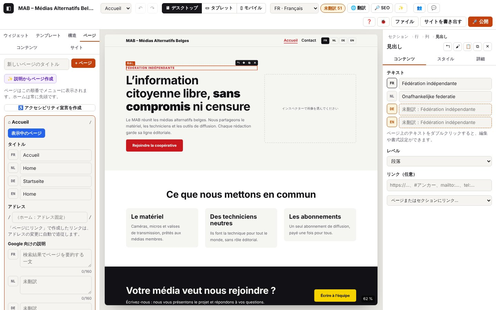

4. ページ、サイトの設定、画像、コレクション、バージョン

このページの内容
- 4.1 ページを作成する
- 4.2 ページのアドレスを変える
- 4.3 タイトルと Google 向けの説明
- 4.4 ページの順番、フッターのリンク、ページを開く
- 4.5 ページを削除する
- 4.6 メニューをカスタマイズする
- 4.7 アクセシビリティ宣言を作成する
- 4.8 サイト名とサイトのアドレス
- 4.9 サイトの言語
- 4.10 色、フォント、段階、ヘッダーとフッター
- 4.11 ブロックで作るヘッダーとフッター
- 4.12 プリセットを管理する
- 4.13 画像を読み込む
- 4.14 拒否された画像、読み取れない画像、重い画像
- 4.15 サイトのロゴ
- 4.16 コレクションを作成する
- 4.17 コレクションを開く
- 4.18 項目を追加・編集する
- 4.19 コレクションのフィールド
- 4.20 コレクションの設定：名前、アドレス、詳細ページ、RSS、イベント、順番
- 4.21 カードと詳細ページを編集する
- 4.22 コレクションを削除する
- 4.23 項目を CSV で書き出す
- 4.24 CSV を読み込む
- 4.25 その日の自動バージョン
- 4.26 バージョンを保存する
- 4.27 バージョンを復元する
- 4.28 バージョンを削除する
- 4.29 バージョンの保存に関するエラー
- 4.30 コンテンツ一覧の設定（今後のイベント、最新ニュース 3 件など）
- この章のコード
以下のログ抜粋はフランス語で記録したものです。コードとレベルはどの言語でも同じです（実際のログのメッセージは表示言語で出ます）。
この章では、サイトを組み立てるためのものをすべて扱います：ページとメニュー、全体の設定（サイト パネル）、読み込んだ画像、繰り返し使うコンテンツ（コレクション：メンバーのメディア、ニュース、イベント）とその CSV での読み込み・書き出し、そしてプロジェクトのバージョンです。
ログのドメイン
page.*：ページ パネル（作成、アドレス、タイトル、説明、順番、削除）、メニュー（page.menu.*）、アクセシビリティ宣言（page.a11y.*）。settings.*：サイト パネル（名前、アドレス、言語、パレット、フォント、段階、ヘッダー、フッター、ロゴ、プリセット）。image.*：読み込んだ画像の変換（WebP、縮小版、サイズ、エラー）。collection.*：コンテンツ パネルとコレクションのウィンドウ（項目、フィールド、設定、カード、詳細ページ、CSV）。version.*：プロジェクトのバージョン ウィンドウ（保存、復元、削除、自動の整理）。- この章で目にするほかのドメインの行：
store.*（履歴、第 1 章）、storage.*（ローカルデータベース、第 1 章と 4.27 節）、inspector.image.*（「画像」フィールド、第 2 章）、ui.*（クリック、ウィンドウ、メッセージ）。
以下の抜粋では、読みやすくするために store.commit（変更ごとに 1 行）、canvas.*（キャンバスの描画）、storage.save（自動保存）の行を省いています。これらの行は journaux/ のファイルと、コピーしたログには入っています。成功した変更の前には、必ず store.commit（DEBUG）が 1 行あります。
ページとメニュー
4.1 ページを作成する
目的：サイトにページを追加すること（追加したページはすぐに自動メニューに入ります）。
手順
- 左の ページ パネルを開きます。
- 「新しいページのタイトル」にタイトルを入力し、+ ページ を押します（または Enter）。
画面の表示：新しい空のページがキャンバスに開き、「ページ「Notre équipe」を作成しました：/notre-equipe/」と表示されます。パネルでは、そのページの設定欄が開いた状態になります。
想定されるログ（実際の抜粋：journaux/pages-creer.log）
技術的な詳細：想定されるログ
04:57:48.054 +16.29s INFO page.add Page « Notre équipe » créée : /notre-equipe/ {"id":"p_xf4i3110","slug":"notre-equipe","lang":"fr","pages":3,"menu":"automatique"}
04:57:48.054 +16.29s DEBUG store.view Vue : pageId=p_xf4i3110 {"pageId":"p_xf4i3110"}
04:57:48.066 +16.30s INFO ui.toast Message affiché : Page « Notre équipe » créée : /notre-equipe/確認ポイント：アドレス（slug）、ページの数、メニューの種類（automatique＝自動、または personnalisé＝カスタム）が付いた page.add（INFO）、続いて store.view（ページが開く）。
バリエーション（journaux/pages-creer-variantes.log）
技術的な詳細：想定されるログ
04:57:48.717 +16.95s WARN page.add-refused Page non créée : titre vide
04:57:48.718 +16.95s ERROR ui.toast Message affiché : Donnez un titre à la page. {"type":"error"}
04:57:48.898 +17.14s INFO page.add Page « Notre équipe » créée : /notre-equipe-2/ {"id":"p_nyf54izm","slug":"notre-equipe-2","deduplicated":true,"lang":"fr","pages":4,"menu":"automatique"}
04:57:48.898 +17.14s DEBUG store.view Vue : pageId=p_nyf54izm {"pageId":"p_nyf54izm"}
04:57:48.908 +17.14s INFO ui.toast Message affiché : Page « Notre équipe » créée : /notre-equipe-2/| 状況 | 画面で変わること | ログ |
|---|---|---|
| 同じタイトルがすでにある | アドレスに番号が付く：/notre-equipe-2/ | "deduplicated":true が付いた page.add |
| カスタムメニュー（4.6） | ページはメニューに追加されない：「+ メニューにないページ…」で追加する | "menu":"personnalisé" が付いた page.add |
エラー
| 状況 | 表示されるメッセージ | ログ | 対処 |
|---|---|---|---|
| タイトルが空 | 「ページにタイトルを付けてください。」 | page.add-refused（WARN） | タイトルを入力してください。 |
| コアによる拒否（まれ） | 拒否のメッセージ | action = add と error.message が付いた page.refused（WARN） | ログを送ってください。 |
4.2 ページのアドレスを変える
目的：ページのアドレス（/equipe/）を決め、必要なら言語ごとのアドレス（/nl/ons-team/）も決めること。
手順
- ページ パネルで、そのページの設定欄を開きます。
- アドレス 欄に新しいアドレスを入力し、Enter を押します（またはほかの場所をクリック）。
- 別の言語の場合：
/nl/…/の欄に入力するか、翻訳したタイトルからアドレスを提案する ⟲ ボタンを押します。
画面の表示：「アドレス：/equipe/」。「ページにリンク」で作成したリンクは、この変更に追従します。
想定されるログ（実際の抜粋：journaux/pages-adresse.log）
技術的な詳細：想定されるログ
04:57:51.002 +19.24s INFO page.slug Adresse de la page modifiée : /notre-equipe/ → /equipe/ {"id":"p_xf4i3110","from":"notre-equipe","to":"equipe","lang":"fr"}
04:57:51.003 +19.24s INFO ui.toast Message affiché : Adresse : /equipe/
04:57:51.337 +19.57s WARN page.refused Modification refusée : Une page « contact » existe déjà. {"action":"slug","error":{"name":"Error","message":"Une page « contact » existe déjà.","stack":"Error: Une page « contact » existe déjà.\nat setPageSlug (http://localhost:8791/core/site.js:116:144)\nat apply.source (http://localhost:8791/editor/pages.js:38:22)\nat apply (http://localhost:8791/editor/pages.js:16:16)\nat saveSlug (http://localhost:8791/editor/pages.js:38:11)"}}
04:57:51.337 +19.57s ERROR ui.toast Message affiché : Une page « contact » existe déjà. {"type":"error"}
04:57:51.681 +19.92s INFO page.title Titre de la page (NL) : « Ons team » {"id":"p_xf4i3110","lang":"nl","length":8}
04:57:51.950 +20.19s DEBUG page.slug-suggest Adresse NL proposée depuis le titre traduit {"id":"p_xf4i3110","lang":"nl","slug":"ons-team"}
04:57:51.959 +20.20s INFO page.slug Adresse en NL : /nl/ons-team/ {"id":"p_xf4i3110","from":"","to":"ons-team","lang":"nl"}確認ポイント：from、to、lang が付いた page.slug（INFO）。⟲ ボタンは、まず提案したアドレス付きの page.slug-suggest（DEBUG）を記録し、続いてその言語の page.slug を記録します。
バリエーション
| 状況 | 画面で変わること | ログ |
|---|---|---|
| 別の言語のアドレスを空にした | その言語では、メイン言語のアドレスに戻る | page.slug「メイン言語と同じアドレス」、"to":"" |
| ホーム | 欄がグレーで「（ホーム：アドレス固定）」 | なし：ホームのアドレスは変えられません |
エラー
| 状況 | 表示されるメッセージ | ログ | 対処 |
|---|---|---|---|
| アドレスがすでに使われている | 「ページ「contact」はすでにあります。」 | page.refused（WARN）、action = slug、続いて ui.toast（ERROR） | 別のアドレスを選んでください。欄は元のアドレスに戻ります。 |
| アドレスが空（メイン言語） | 「アドレスは空にできません。」 | page.refused（WARN）、action = slug | アドレスを入力してください。 |
| 別の言語のアドレスを拒否 | 同上 | page.refused（WARN）、action = slug-lang | 同上 |
4.3 タイトルと Google 向けの説明
目的：ページのタイトル（メニュー、ブラウザーのタブ、検索結果）と説明を、言語ごとに決めること。
手順
- ページの設定欄 → タイトル：言語ごとに 1 行（FR、NL、DE、EN）。
- Google 向けの説明：160 文字以内の文を 1 つ。超えるとカウンターが赤くなります。
画面の表示：メニューとページの切り替えメニューに、タイトルがその場で反映されます。タイトルのない言語は枠で囲まれます（「未翻訳」）。
想定されるログ（実際の抜粋：journaux/pages-titre-description.log）
技術的な詳細：想定されるログ
04:57:52.552 +20.79s INFO page.title Titre de la page (DE) : « Unser Team » {"id":"p_xf4i3110","lang":"de","length":10}
04:57:52.844 +21.08s INFO page.seo Description pour Google (FR) : 44 caractères {"id":"p_xf4i3110","lang":"fr","length":44}
04:57:53.128 +21.36s WARN page.seo Description pour Google trop longue (175/160) : Google la coupera {"id":"p_xf4i3110","lang":"nl","length":175}確認ポイント：欄から離れたときに、言語と長さが付いた page.title（INFO）が 1 回だけ出ます（入力中の page.title は TRACE で、初期状態では見えません）。page.seo（INFO）には文字数が付きます。
バリエーション
| 状況 | 画面で変わること | ログ |
|---|---|---|
| タイトルを消した | メニューではページ名が「タイトルなし」になる | "empty":true が付いた page.title |
エラー
| 状況 | 表示されるメッセージ | ログ | 対処 |
|---|---|---|---|
| 説明が 160 文字を超える | カウンターが赤く 175/160 | page.seo（WARN）「長すぎます（175/160）。Google によって途中で切られます」 | 文を短くしてください（サイトはそのままでも公開されます）。 |
4.4 ページの順番、フッターのリンク、ページを開く
目的：メニュー内のページを並べ替え、あるページ（法的表示など）をメニューではなくフッターに置き、ページを切り替えること。
手順
- ページの設定欄：↑ / ↓ で上げ下げします（ホームは常に先頭です）。
- チェックボックス「フッターにリンク（メニューには表示しない）」。
- 開く でページをキャンバスに表示します（上部のページ切り替えメニューも使えます）。
想定されるログ（実際の抜粋：journaux/pages-ordre-pied.log）
技術的な詳細：想定されるログ
04:57:53.624 +21.86s INFO page.move Page « Notre équipe » montée dans le menu (position 2) {"id":"p_xf4i3110","dir":-1,"from":2,"to":1}
04:57:53.957 +22.19s INFO page.footer-link « Notre équipe » : lien dans le pied de page (retirée du menu) {"id":"p_xf4i3110","footer":true}
04:57:54.292 +22.53s INFO page.footer-link « Notre équipe » : de retour dans le menu {"id":"p_xf4i3110","footer":false}
04:57:54.800 +23.04s INFO page.open Page ouverte : Accueil {"id":"p_v3ibds93","slug":""}
04:57:54.801 +23.04s DEBUG store.view Vue : pageId=p_v3ibds93 {"pageId":"p_v3ibds93"}確認ポイント：from と to（0 = ホーム）が付いた page.move（INFO）、footer が付いた page.footer-link（INFO）、page.open（INFO）とそれに続く store.view。
バリエーション
| 状況 | 画面で変わること | ログ |
|---|---|---|
| 上部の切り替えメニューでページを選んだ | 結果は同じ | store.view だけ（page.open は出ない） |
エラー
| 状況 | 表示されるメッセージ | ログ | 対処 |
|---|---|---|---|
| 移動を拒否（まれ） | 拒否のメッセージ | page.refused（WARN）、action = move | ログを送ってください。 |
4.5 ページを削除する
目的：サイトからページを取り除くこと（Ctrl+Z で元に戻せます）。
手順
- ページの設定欄 → ✕ を押し、確認します。
画面の表示：ページがパネル、メニュー、切り替えメニューから消えます。そのページを開いていた場合は、ホームが表示されます。
想定されるログ（実際の抜粋。1 回目はキャンセル：journaux/pages-supprimer.log）
技術的な詳細：想定されるログ
04:57:49.534 +17.77s DEBUG page.delete-cancel Suppression de « Notre équipe » annulée {"id":"p_nyf54izm"}
04:57:49.724 +17.96s DEBUG store.view Vue : pageId=p_v3ibds93 {"pageId":"p_v3ibds93"}
04:57:49.748 +17.98s INFO page.delete Page « Notre équipe » supprimée (Ctrl+Z pour la retrouver) {"id":"p_nyf54izm","slug":"notre-equipe-2","pages":3,"wasOpen":true}確認ポイント：アドレスと残りのページ数が付いた page.delete（INFO）。表示中だった場合は "wasOpen":true（その前にホームへの store.view）。
バリエーション
| 状況 | 画面で変わること | ログ |
|---|---|---|
| 「キャンセル」と答えた | 何も変わらない | page.delete-cancel（DEBUG） |
| 直後に Ctrl+Z | ページが戻る | store.undo（第 2 章） |
エラー
| 状況 | 表示されるメッセージ | ログ | 対処 |
|---|---|---|---|
| ホームページ | ホームには ✕ ボタンがない（保護されています） | なし。それでも削除が起きた場合：page.refused（WARN）、action = delete、「ホームページは削除できません。」 | 代わりに内容を変えてください。 |
4.6 メニューをカスタマイズする
目的：リンク（SNS、仲間のサイト）、サブメニュー、ページのタイトルとは違うラベルを追加すること。
手順
- ページ パネルの下部：メニューをカスタマイズ（リンク、サブメニュー、ラベル）。
- + リンク：ラベルとアドレス（
https://…、#ancre）。 - 各項目で：↑ ↓（順番）、⇥（上の項目のサブメニューにする）、⇤（サブメニューから出す）、✕（メニューから外す）。ラベルは上部で選んだ言語で入力します。
- 「+ メニューにないページ…」で、外したページを戻せます。
- 自動メニューに戻す でカスタマイズを消します（Ctrl+Z で戻せます）。
想定されるログ（実際の抜粋：journaux/pages-menu.log）
技術的な詳細：想定されるログ
04:57:55.444 +23.68s INFO page.menu.customize Menu personnalisé : 3 entrée(s) reprises des pages {"items":3}
04:57:55.784 +24.02s WARN page.menu.link-refused Lien du menu non ajouté : libellé ou adresse vide {"label":false,"url":false}
04:57:55.784 +24.02s ERROR ui.toast Message affiché : Indiquez un libellé et une adresse. {"type":"error"}
04:57:56.018 +24.25s INFO page.menu.link-add Lien « Facebook » ajouté au menu {"url":"https://www.facebook.com/mab","newTab":true,"lang":"fr","items":4}
04:57:56.466 +24.70s INFO page.menu.indent Menu : lien « Facebook » mis en sous-menu de l’entrée au-dessus {"item":"m_24f4joq","kind":"link","index":3}
04:57:56.816 +25.05s INFO page.menu.outdent Menu : lien « Facebook » sorti du sous-menu {"item":"m_24f4joq","kind":"link","sub":true,"index":0}
04:57:57.174 +25.41s INFO page.menu.move Menu : lien « Facebook » monté {"item":"m_24f4joq","kind":"link","index":3,"dir":-1}
04:57:57.517 +25.75s INFO page.menu.label Libellé du menu (FR) : « Notre page Facebook » {"item":"m_24f4joq","kind":"link","lang":"fr","custom":true}
04:57:57.874 +26.11s INFO page.menu.url Adresse d’un lien du menu modifiée {"item":"m_24f4joq","url":"https://www.facebook.com/media.alternatif"}
04:57:58.377 +26.61s INFO page.menu.remove Menu : « Notre équipe » retiré (la page existe toujours) {"item":"m_hn0cfcu","kind":"page","index":1}
04:57:58.722 +26.96s INFO page.menu.page-add Page « Notre équipe » ajoutée au menu {"page":"p_xf4i3110"}確認ポイント：page.menu.customize（取り込んだ項目の数）、続いて操作ごとに INFO の行が 1 つ：page.menu.link-add、page.menu.indent、page.menu.outdent、page.menu.move、page.menu.label、page.menu.url、page.menu.remove、page.menu.page-add。データには、項目（item）、その種類（page または link）、位置（index、サブメニューなら sub）が入ります。
自動メニューに戻す（journaux/pages-menu-auto.log）
技術的な詳細：想定されるログ
04:57:59.389 +27.63s DEBUG page.menu.auto-cancel Retour au menu automatique annulé
04:57:59.591 +27.83s INFO page.menu.auto Menu automatique rétabli (toutes les pages, dans l’ordre) {"dropped":4}バリエーション
| 状況 | 画面で変わること | ログ |
|---|---|---|
別のサイトへのリンク（https://…） | 新しいタブで開く | "newTab":true が付いた page.menu.link-add |
| ラベルを空にした | 項目はページのタイトルに戻る | "custom":false が付いた page.menu.label |
| 自動メニューに戻すときに「キャンセル」 | 何も変わらない | page.menu.auto-cancel（DEBUG） |
エラー
| 状況 | 表示されるメッセージ | ログ | 対処 |
|---|---|---|---|
| ラベルまたはアドレスが空 | 「ラベルとアドレスを入力してください。」 | 足りないものの label/url が false の page.menu.link-refused（WARN） | 両方の欄を入力してください。 |
| サブメニューにできない（2 階層目、先頭の項目） | 「サブメニューは 1 階層までです…」 | page.refused（WARN）、action = menu-indent | この場合 ⇥ ボタンはグレーになっています。メッセージが出たらログを送ってください。 |
| リンクのアドレスを拒否 | 拒否のメッセージ | page.refused（WARN）、action = menu-link-add または menu-url | https://、mailto:、tel: または #ancre を使ってください。 |
4.7 アクセシビリティ宣言を作成する
目的：「アクセシビリティ」ページ（FR、NL、DE、EN。WCAG 2.1 AA / EN 301 549）を、サイトのチェックで見つかった点をあらかじめ入れた状態で作り、フッターにリンクを置くこと。
手順
- ページ パネル → ♿ アクセシビリティ宣言を作成。
- 組織を確認し、連絡先のメールアドレス、適合状況、日付、わかっているアクセシブルでないコンテンツを入力します。
- ページを作成 を押します。
画面の表示：ページが開き、「「アクセシビリティ」ページを 4 言語で作成し、フッターにリンクを置きました。」と表示されます。内容を読み直してください：このひな形は法的な助言ではありません。
想定されるログ（実際の抜粋。1 回目はメールアドレスなし：journaux/pages-accessibilite.log）
技術的な詳細：想定されるログ
04:58:00.167 +28.40s INFO page.a11y.open Assistant de déclaration d’accessibilité ouvert (1 limite(s) pré-remplie(s)) {"limits":1}
04:58:00.170 +28.41s DEBUG ui.dialog.open Fenêtre ouverte : Déclaration d’accessibilité {"id":"a11yDialog","class":"audit","modal":true}
04:58:00.234 +28.47s WARN page.a11y.refused Déclaration non créée : Indiquez une adresse e-mail valide pour le contact accessibilité. {"email":false,"status":"partial","error":{"name":"Error","message":"Indiquez une adresse e-mail valide pour le contact accessibilité.","stack":"Error: Indiquez une adresse e-mail valide pour le contact accessibilité.\nat buildAccessibilityPage (http://localhost:8791/core/a11ypage.js:84:17)\nat addAccessibilityPage (http://localhost:8791/core/a11ypage.js:113:16)\nat HTMLButtonElement.onclick (http://localhost:8791/editor/pages.js:213:21)"}}
04:58:00.235 +28.47s ERROR ui.toast Message affiché : Indiquez une adresse e-mail valide pour le contact accessibilité. {"type":"error"}
04:58:00.497 +28.73s INFO page.a11y.create Page « Accessibilité » créée en 4 langues : /accessibilite/ {"id":"p_jlagazl7","slug":"accessibilite","status":"partial","limits":1,"langs":["fr","nl","de","en"],"footerLink":true}
04:58:00.498 +28.73s DEBUG store.view Vue : pageId=p_jlagazl7 {"pageId":"p_jlagazl7"}
04:58:00.506 +28.74s INFO ui.toast Message affiché : Page « Accessibilité » créée en 4 langues, avec un lien dans le pied de page.
04:58:00.510 +28.75s DEBUG ui.dialog.close Fenêtre fermée : Déclaration d’accessibilité {"id":"a11yDialog"}確認ポイント：page.a11y.open（あらかじめ入れた制限の数。/accessibilite/ ページがすでにある場合は "exists":true）、続いてアドレス、状況（partial、full、none）、言語、"footerLink":true が付いた page.a11y.create。
エラー
| 状況 | 表示されるメッセージ | ログ | 対処 |
|---|---|---|---|
| メールアドレスがない、または無効 | 「アクセシビリティの連絡先として有効なメールアドレスを入力してください。」 | "email":false が付いた page.a11y.refused（WARN） | アドレスを入力してください（カーソルがその欄に置かれます）。 |
宣言の言語：このページは、サイトの言語に関係なく、フランス語、オランダ語、ドイツ語、英語で書かれます。ほかの言語（たとえば日本語）にするには、翻訳表で翻訳してください（第 5 章）。翻訳するまでは、メイン言語がこの 4 言語のどれかであればメイン言語で表示され、そうでなければ未記入のままです。「Voies de recours」（救済手段）の文章はベルギーのオンブズマンを挙げているので、自分の国に合わせて書き直してください。
サイトの設定（サイト パネル）
4.8 サイト名とサイトのアドレス
目的：サイトに名前を付け（ブラウザーのタブ、標準のヘッダー、RSS フィード）、公開アドレスを決めること（サイトマップ、言語リンク、RSS、共有）。
手順
- サイト パネル → 基本情報：「サイト名」、「サイトのアドレス」。
想定されるログ（実際の抜粋：journaux/pages-reglages-identite.log）
技術的な詳細：想定されるログ
04:57:33.489 +1.73s INFO settings.name Nom du site : « MAB – Médias Alternatifs Belges » {"length":31}
04:57:33.790 +2.03s WARN settings.refused Réglage refusé : L’adresse du site doit commencer par https:// {"setting":"base-url","error":{"name":"Error","message":"L’adresse du site doit commencer par https://","stack":"Error: L’adresse du site doit commencer par https://\nat setSiteMeta (http://localhost:8791/core/site.js:238:75)\nat http://localhost:8791/editor/panels.js:158:58\nat apply (http://localhost:8791/editor/panels.js:22:16)\nat HTMLInputElement.<anonymous> (http://localhost:8791/editor/panels.js:158:47)"}}
04:57:33.791 +2.03s ERROR ui.toast Message affiché : L’adresse du site doit commencer par https:// {"type":"error"}
04:57:34.074 +2.31s INFO settings.base-url Adresse du site : https://www.media-alternatif.be {"url":"https://www.media-alternatif.be"}確認ポイント：settings.name（INFO。欄から離れたときに 1 回。入力中は TRACE）、アドレス付きの settings.base-url（INFO）。
バリエーション（journaux/pages-reglages-adresse-vide.log）
技術的な詳細：想定されるログ
04:57:47.265 +15.50s INFO settings.base-url Adresse du site effacée (plan du site, RSS et liens de langue absolus désactivés) {"url":null}| 状況 | 画面で変わること | ログ |
|---|---|---|
| アドレスを消した | 書き出し時にサイトマップも RSS フィードも作られなくなる | settings.base-url「サイトのアドレスを消去しました…」、"url":null |
| 名前を空にした | ヘッダーの名前が空になる | "empty":true が付いた settings.name |
エラー
| 状況 | 表示されるメッセージ | ログ | 対処 |
|---|---|---|---|
アドレスに https:// がない | 「サイトのアドレスは https:// で始めてください」 | settings.refused（WARN）、setting = base-url | 完全なアドレスを入力してください：https://www.exemple.be。 |
4.9 サイトの言語
目的：サイトの言語（フランス語、オランダ語、ドイツ語、英語、日本語）を選ぶこと。
手順
- サイト パネル → 言語：チェックを入れる／外す。メイン言語（「（メイン）」）のチェックは外せません。
画面の表示：上部の言語の切り替え、「未翻訳」の欄、「未翻訳 …」バッジが連動して変わります。
想定されるログ（実際の抜粋：journaux/pages-reglages-langues.log）
技術的な詳細：想定されるログ
04:57:34.577 +2.81s INFO settings.lang-remove Langue retirée : English (ses traductions restent dans le projet) {"lang":"en","languages":["fr","nl","de"],"main":"fr"}
04:57:34.577 +2.81s DEBUG store.view Vue :
04:57:34.873 +3.11s INFO settings.lang-add Langue ajoutée : English (textes à traduire) {"lang":"en","languages":["fr","nl","de","en"],"main":"fr"}
04:57:34.873 +3.11s DEBUG store.view Vue : 確認ポイント：言語、言語の一覧、メイン言語（main）が付いた settings.lang-remove / settings.lang-add（INFO）。
バリエーション
| 状況 | 画面で変わること | ログ |
|---|---|---|
| 言語を外してから戻した | その言語の翻訳が戻る（プロジェクトに残っていたため） | settings.lang-remove、続いて settings.lang-add |
| メイン言語を変える | メイン言語はサイトの作成時に選びます（ファイル →「新しい空のサイト」：フランス語、オランダ語、ドイツ語、英語、日本語。1.5 を参照）。あとからは変更できません。.json ファイルから開いたプロジェクトは、そのファイルのメイン言語のままです | project.new {"lang":…} |
エラー
| 状況 | 表示されるメッセージ | ログ | 対処 |
|---|---|---|---|
| メイン言語を外す（チェックボックスはグレー） | 「メイン言語は有効のままにしてください。」 | settings.refused（WARN）、setting = lang-remove | メイン言語は常に有効です。 |
4.10 色、フォント、段階、ヘッダーとフッター
目的：サイト全体の見た目を 1 か所で設定すること（要素がこれらの設定をどう使うかは第 3 章で説明しています）。
手順
- パレット：色をクリックして変え、名前を変え、+ 色 で追加し、✕ で追加した色を削除します。「パレット外の色」では、固定された色をすべての場所で置き換えます。
- タイポグラフィ：見出しと本文のフォント、角の丸み、コンテンツの幅、ページ間のトランジション。
- 文字サイズの段階 と 余白：モバイルと大きな画面でのサイズ。
- 標準のヘッダー：固定ヘッダー、言語の選択、モバイルの「メニュー」ボタン。フッター：言語ごとのテキスト。
想定されるログ（実際の抜粋：journaux/pages-reglages-design.log）
技術的な詳細：想定されるログ
04:57:35.385 +3.62s INFO settings.color Couleur « Principale » : #a01014 {"key":"c1","value":"#a01014"}
04:57:35.565 +3.80s INFO settings.color-name Couleur c1 renommée : « Rouge MAB » {"key":"c1","name":"Rouge MAB"}
04:57:35.760 +4.00s INFO settings.color-add Couleur ajoutée à la palette (c7) {"key":"c7","value":"#7c3aed","colors":7}
04:57:36.068 +4.30s INFO settings.color-remove Couleur « Couleur 7 » supprimée de la palette {"key":"c7","value":"#7c3aed"}
04:57:36.355 +4.59s INFO settings.font Police des titres : Système (aucun téléchargement) {"role":"heading","font":"system","google":false}
04:57:36.534 +4.77s INFO settings.theme Arrondi des angles : 12 px {"key":"radius","value":12,"typed":"12"}
04:57:36.826 +5.06s INFO settings.type-scale Échelle de texte : Texte mobile (px) = 17 {"key":"minSize","from":16,"to":17}
04:57:37.265 +5.50s INFO settings.space-scale Espacements : Base mobile (px) = 14 {"key":"minSize","from":16,"to":14}
04:57:37.724 +5.96s INFO settings.header En-tête par défaut : bouton « Menu » sur mobile non {"key":"burger","value":false}
04:57:37.924 +6.16s INFO settings.footer-text Texte du pied de page (FR) : 47 caractères {"lang":"fr","length":47}確認ポイント：設定ごとに INFO の行が 1 つ：settings.color（キー c1… と値。カラーピッカーを離したときに 1 回だけ。ドラッグ中は TRACE）、settings.color-name、settings.color-add、settings.color-remove、settings.font（Google Fonts から読み込むフォントなら "google":true）、settings.theme（radius、contentWidth、pageTransitions）、settings.type-scale、settings.space-scale（from → to）、settings.header（burger、sticky、showLangs）、settings.footer-text（言語と長さ）。
バリエーション
| 状況 | 画面で変わること | ログ |
|---|---|---|
| テキストが読みにくくなる色 | 「コントラスト」でその組み合わせが赤い ✗ になる | lowContrast が付いた settings.color（例：["Texte sur le fond 3,1:1"]） |
| 固定された色をパレットの色で置き換えた | 「#… をすべて置き換えました（n 件の設定）。」 | from、to、count が付いた settings.color-replace（INFO） |
| 範囲外の値（例：角の丸み 99） | 値が範囲内に戻される | value（採用値）と typed（入力値）が異なる settings.theme |
エラー
| 状況 | 表示されるメッセージ | ログ | 対処 |
|---|---|---|---|
| コアが設定を拒否 | 拒否のメッセージ | setting（例：color-add、font-heading、type-minSize）と error.message が付いた settings.refused（WARN） | ログを送ってください。 |
4.11 ブロックで作るヘッダーとフッター
目的：標準のヘッダーやフッターを、編集できるブロック（ロゴ、メニュー、言語、テキスト…）に置き換えること。
手順
- サイト パネル → ヘッダーとフッター → ブロックでカスタマイズ（2 回目以降は 編集）。
- キャンバスでブロックを編集し、帯の 完了 を押します。
- 標準に戻す でブロック版をやめます（Ctrl+Z で戻せます）。
想定されるログ（実際の抜粋：journaux/pages-reglages-entete-blocs.log）
技術的な詳細：想定されるログ
04:57:38.442 +6.68s INFO settings.layout-customize En-tête converti en blocs modifiables {"zone":"header"}
04:57:38.442 +6.68s INFO settings.layout-edit Modification de l’en-tête en blocs {"zone":"header"}
04:57:38.442 +6.68s INFO store.edit-target Édition : header {"kind":"header"}
04:57:38.900 +7.14s INFO store.edit-target Retour à la page
04:57:39.490 +7.73s INFO settings.layout-reset En-tête : retour à la version par défaut (Ctrl+Z pour annuler) {"zone":"header"}確認ポイント：settings.layout-customize（初回のみ）、settings.layout-edit（2 回目以降は "custom":true）、store.edit-target（編集モード）、続いて settings.layout-reset。
4.12 プリセットを管理する
目的：要素の スタイル タブで作ったプリセット（保存したスタイル）の名前を変え、複製し、削除すること（第 3 章、style.preset-create）。
手順
- サイト パネル → プリセット：欄で名前を変え（Enter）、⧉ で複製、✕ で削除します（要素の見た目はそのまま残ります）。
想定されるログ（実際の抜粋：journaux/pages-reglages-presets.log）
技術的な詳細：想定されるログ
04:57:41.127 +9.36s INFO settings.preset-rename Preset renommé : « Titre MAB » → « Titre principal » {"id":"ps_fzdure4d","type":"heading"}
04:57:41.448 +9.69s INFO settings.preset-duplicate Preset « Titre principal » dupliqué {"id":"ps_fzdure4d","type":"heading","presets":2}
04:57:41.736 +9.97s DEBUG settings.preset-delete-cancel Suppression du preset « Titre principal » annulée {"id":"ps_fzdure4d"}
04:57:41.945 +10.18s INFO settings.preset-delete Preset « Titre principal » supprimé (1 élément garde son apparence) {"id":"ps_fzdure4d","type":"heading","used":1}確認ポイント：settings.preset-rename、settings.preset-duplicate（プリセットの数）、used（対象の要素の数）付きの settings.preset-delete。その種類の標準のプリセットだった場合は "wasDefault":true。
バリエーション
| 状況 | 画面で変わること | ログ |
|---|---|---|
| 使われているプリセットで「キャンセル」と答えた | 何も変わらない | settings.preset-delete-cancel（DEBUG） |
| 使われていないプリセット | 確認なしで削除 | "used":0 が付いた settings.preset-delete |
エラー
| 状況 | 表示されるメッセージ | ログ | 対処 |
|---|---|---|---|
| 名前が空 | なし（名前はそのまま） | なし | 名前を入力してください。 |
| コアによる拒否 | 拒否のメッセージ | settings.refused（WARN）、setting = preset-… | ログを送ってください。 |
画像
4.13 画像を読み込む
目的：画像（ロゴ、セクションの写真、コレクションの項目の画像）を追加すること。Atelier は画像をブラウザーの中で WebP に変換し、幅を最大 1600 px に縮め、小さな画面用に 480 px と 960 px の縮小版を用意します。
手順
- 画像のフィールド（インスペクター、サイト パネルのロゴ、項目の「画像」フィールド）で：画像を読み込む（または 置き換え）。
- JPG、PNG、WebP、GIF、AVIF、BMP のファイルを選びます。
画面の表示：サムネイルと、「画像を WebP で追加しました：1600×960 px、10 KB。」というメッセージが表示されます。
想定されるログ（実際の抜粋。2000×1200 px のロゴ：journaux/images-import.log）
技術的な詳細：想定されるログ
04:57:42.517 +10.75s INFO inspector.image.start [inspector.image#1] Import d’une image {"field":"logo","type":"image/png","kb":2538}
04:57:42.517 +10.75s INFO image.import.start [image.import#1] Import de l’image « logo-mab.png » {"name":"logo-mab.png","type":"image/png","kb":2538}
04:57:42.596 +10.83s DEBUG image.import.decode [image.import#1 · 79 ms] Image lue : 2000×1200 px {"width":2000,"height":1200,"ms":78}
04:57:42.596 +10.83s DEBUG image.import.resize [image.import#1 · 79 ms] Réduite à 1600×960 px (largeur maximale 1600 px) {"from":"2000×1200","to":"1600×960"}
04:57:42.787 +11.02s DEBUG image.import.encode [image.import#1 · 270 ms] Version principale : 1600×960 px, 10 Ko (image/webp) {"w":1600,"h":960,"mime":"image/webp","kb":10,"ms":191}
04:57:42.817 +11.05s DEBUG image.import.variant [image.import#1 · 300 ms] Variante 480 px : 2 Ko {"w":480,"kb":2,"ms":28}
04:57:42.920 +11.16s DEBUG image.import.variant [image.import#1 · 403 ms] Variante 960 px : 5 Ko {"w":960,"kb":5,"ms":102}
04:57:42.924 +11.16s INFO image.import.ok [image.import#1 · 407 ms] Image prête : 1600×960 px, 10 Ko (−99 %), 2 variante(s) {"name":"logo-mab.webp","mime":"image/webp","width":1600,"height":960,"kbIn":2538,"kbOut":10,"gain":99,"variants":[480,960]}
04:57:42.924 +11.16s DEBUG inspector.image.webp [inspector.image#1 · 407 ms] Image convertie en WebP {"width":1600,"height":960,"kb":10,"variants":2}
04:57:42.944 +11.18s INFO settings.logo Logo importé {"kind":"asset","asset":"img_o0aqpu4t","file":"logo-mab.webp"}
04:57:42.944 +11.18s INFO inspector.image.ok [inspector.image#1 · 427 ms] Image ajoutée : 1600×960 px {"asset":"img_o0aqpu4t","field":"logo"}
04:57:42.945 +11.18s INFO ui.toast Message affiché : Image ajoutée en WebP : 1600×960 px, 10 Ko.確認ポイント：image.import の流れ：start（名前、種類、KB 単位のサイズ）、decode（元の寸法、所要時間）、resize（幅が 1600 px を超える場合）、encode（メインの画像：寸法、サイズ、種類）、縮小版ごとに variant の行が 1 つ、そして変換前後のサイズ（kbIn、kbOut）、% で表した削減率、縮小版が付いた ok。この流れはフィールドの inspector.image の流れ（第 2 章）に囲まれ、その後に画像を受け取ったフィールドの行（settings.logo、collection.item.value…）が続きます。
バリエーション
| 状況 | 画面で変わること | ログ |
|---|---|---|
| 小さな画像（480 px 未満） | 縮小版なし、縮小なし（journaux/images-import-petite.log） | image.import.resize も image.import.variant も出ない。ok に "variants":[] |
| WebP に対応していないブラウザー（古い Safari） | 画像は JPEG で保存される（journaux/images-sans-webp.log） | image.import.webp-unsupported（WARN）、続いて "mime":"image/jpeg" が付いた encode |
コレクションの項目の画像（journaux/images-collection.log） | カードと詳細ページに表示される | image.import.ok、続いて collection.item.value（"field":"image"） |
技術的な詳細：想定されるログ
04:57:43.496 +11.73s INFO inspector.image.start [inspector.image#3] Import d’une image {"field":"logo","type":"image/png","kb":93}
04:57:43.496 +11.73s INFO image.import.start [image.import#3] Import de l’image « logo-jpeg.png » {"name":"logo-jpeg.png","type":"image/png","kb":93}
04:57:43.503 +11.74s DEBUG image.import.decode [image.import#3 · 7 ms] Image lue : 400×200 px {"width":400,"height":200,"ms":7}
04:57:43.517 +11.75s WARN image.import.webp-unsupported [image.import#3 · 21 ms] Ce navigateur ne sait pas produire du WebP : image enregistrée en JPEG {"w":400,"h":200,"got":"image/png"}
04:57:43.531 +11.77s DEBUG image.import.encode [image.import#3 · 35 ms] Version principale : 400×200 px, 3 Ko (image/jpeg) {"w":400,"h":200,"mime":"image/jpeg","kb":3,"ms":28}
04:57:43.532 +11.77s INFO image.import.ok [image.import#3 · 36 ms] Image prête : 400×200 px, 3 Ko (−97 %), 0 variante(s) {"name":"logo-jpeg.jpg","mime":"image/jpeg","width":400,"height":200,"kbIn":93,"kbOut":3,"gain":97,"variants":[]}
04:57:43.532 +11.77s DEBUG inspector.image.webp [inspector.image#3 · 36 ms] Image convertie en WebP {"width":400,"height":200,"kb":3}
04:57:43.557 +11.79s INFO settings.logo Logo importé {"kind":"asset","asset":"img_t79x5gy0","file":"logo-jpeg.jpg"}
04:57:43.557 +11.79s INFO inspector.image.ok [inspector.image#3 · 61 ms] Image ajoutée : 400×200 px {"asset":"img_t79x5gy0","field":"logo"}
04:57:43.557 +11.79s INFO ui.toast Message affiché : Image ajoutée en WebP : 400×200 px, 3 Ko.4.14 拒否された画像、読み取れない画像、重い画像
目的：画像が受け付けられない理由や、サイトを重くしている理由を理解すること。
想定されるログ — 拒否される種類のファイル（SVG、PDF…：journaux/images-type-refuse.log）
技術的な詳細：想定されるログ
04:57:43.803 +12.04s INFO inspector.image.start [inspector.image#4] Import d’une image {"field":"logo","type":"image/svg+xml","kb":0}
04:57:43.803 +12.04s WARN image.type-refused Image refusée : type « image/svg+xml » non pris en charge (JPG, PNG, WebP, GIF, AVIF ou BMP) {"name":"logo.svg","type":"image/svg+xml","kb":1}
04:57:43.804 +12.04s ERROR inspector.image.fail [inspector.image#4 · 1 ms] Image non importée : Format non pris en charge. Utilisez une image JPG, PNG, WebP ou GIF. {"field":"logo","type":"image/svg+xml","error":{"name":"Error","message":"Format non pris en charge. Utilisez une image JPG, PNG, WebP ou GIF.","stack":"Error: Format non pris en charge. Utilisez une image JPG, PNG, WebP ou GIF.\nat imageToWebp (http://localhost:8791/editor/images.js:43:11)\nat HTMLInputElement.<anonymous> (http://localhost:8791/editor/fields.js:154:25)\nat eval (eval at evaluate (:290:30), <anonymous>:28:11)\nat UtilityScript.evaluate (<anonymous>:292:16)"}}
04:57:43.804 +12.04s ERROR ui.toast Message affiché : Format non pris en charge. Utilisez une image JPG, PNG, WebP ou GIF. {"type":"error"}想定されるログ — 読み取れないファイル（破損している、不完全、またはこのブラウザーが解読できない形式：journaux/images-illisible.log）
技術的な詳細：想定されるログ
04:57:44.324 +12.56s INFO inspector.image.start [inspector.image#5] Import d’une image {"field":"logo","type":"image/png","kb":4}
04:57:44.324 +12.56s INFO image.import.start [image.import#4] Import de l’image « photo-abimee.png » {"name":"photo-abimee.png","type":"image/png","kb":4}
04:57:44.328 +12.56s ERROR image.import.fail [image.import#4 · 4 ms] Image illisible : fichier abîmé, incomplet, ou format que ce navigateur ne sait pas décoder. {"name":"photo-abimee.png","type":"image/png","kb":4,"cause":"The source image could not be decoded.","error":{"name":"Error","message":"Image illisible : fichier abîmé, incomplet, ou format que ce navigateur ne sait pas décoder.","stack":"Error: Image illisible : fichier abîmé, incomplet, ou format que ce navigateur ne sait pas décoder.\nat imageToWebp (http://localhost:8791/editor/images.js:51:27)\nat async HTMLInputElement.<anonymous> (http://localhost:8791/editor/fields.js:154:19)","cause":"The source image could not be decoded."}}
04:57:44.328 +12.56s ERROR inspector.image.fail [inspector.image#5 · 4 ms] Image non importée : Image illisible : fichier abîmé, incomplet, ou format que ce navigateur ne sait pas décoder. {"field":"logo","type":"image/png","error":{"name":"Error","message":"Image illisible : fichier abîmé, incomplet, ou format que ce navigateur ne sait pas décoder.","stack":"Error: Image illisible : fichier abîmé, incomplet, ou format que ce navigateur ne sait pas décoder.\nat imageToWebp (http://localhost:8791/editor/images.js:51:27)\nat async HTMLInputElement.<anonymous> (http://localhost:8791/editor/fields.js:154:19)","cause":"The source image could not be decoded."}}
04:57:44.329 +12.57s ERROR ui.toast Message affiché : Image illisible : fichier abîmé, incomplet, ou format que ce navigateur ne sait pas décoder. {"type":"error"}想定されるログ — とても重い画像（11 MB の写真：journaux/images-lourde.log）
技術的な詳細：想定されるログ
04:57:44.753 +12.99s INFO inspector.image.start [inspector.image#6] Import d’une image {"field":"logo","type":"image/png","kb":10753}
04:57:44.754 +12.99s INFO image.import.start [image.import#5] Import de l’image « photo-lourde.png » {"name":"photo-lourde.png","type":"image/png","kb":10753}
04:57:44.754 +12.99s WARN image.import.heavy [image.import#5 · 0 ms] Fichier très lourd (11 Mo) : la conversion peut prendre plusieurs secondes {"kb":10753,"limit":8192}
04:57:44.851 +13.09s DEBUG image.import.decode [image.import#5 · 97 ms] Image lue : 2000×1600 px {"width":2000,"height":1600,"ms":98}
04:57:44.852 +13.09s DEBUG image.import.resize [image.import#5 · 98 ms] Réduite à 1600×1280 px (largeur maximale 1600 px) {"from":"2000×1600","to":"1600×1280"}
04:57:45.306 +13.54s DEBUG image.import.encode [image.import#5 · 552 ms] Version principale : 1600×1280 px, 1194 Ko (image/webp) {"w":1600,"h":1280,"mime":"image/webp","kb":1194,"ms":454}
04:57:45.349 +13.59s DEBUG image.import.variant [image.import#5 · 595 ms] Variante 480 px : 61 Ko {"w":480,"kb":61,"ms":41}
04:57:45.518 +13.76s DEBUG image.import.variant [image.import#5 · 764 ms] Variante 960 px : 352 Ko {"w":960,"kb":352,"ms":167}
04:57:45.519 +13.76s WARN image.import.big-output [image.import#5 · 765 ms] Image encore lourde après conversion (1194 Ko) : le site sera plus lent à charger {"kb":1194,"limit":400}
04:57:45.526 +13.76s INFO image.import.ok [image.import#5 · 772 ms] Image prête : 1600×1280 px, 1194 Ko (−89 %), 2 variante(s) {"name":"photo-lourde.webp","mime":"image/webp","width":1600,"height":1280,"kbIn":10753,"kbOut":1194,"gain":89,"variants":[480,960]}
04:57:45.526 +13.76s DEBUG inspector.image.webp [inspector.image#6 · 773 ms] Image convertie en WebP {"width":1600,"height":1280,"kb":1194,"variants":2}
04:57:45.591 +13.83s INFO settings.logo Logo importé {"kind":"asset","asset":"img_rxnhmhm0","file":"photo-lourde.webp"}
04:57:45.591 +13.83s INFO inspector.image.ok [inspector.image#6 · 838 ms] Image ajoutée : 1600×1280 px {"asset":"img_rxnhmhm0","field":"logo"}
04:57:45.591 +13.83s INFO ui.toast Message affiché : Image ajoutée en WebP : 1600×1280 px, 1194 Ko.確認ポイント：画像は受け付けられますが、image.import.heavy（WARN、8 MB を超えるファイル）と image.import.big-output（WARN、変換後も 400 KB を超える）が知らせます。
エラー
| 状況 | 表示されるメッセージ | ログ | 対処 |
|---|---|---|---|
| 対応していない種類（SVG、PDF、HEIC…） | 「対応していない形式です。JPG、PNG、WebP、GIF の画像を使ってください。」 | type が付いた image.type-refused（WARN）、続いて inspector.image.fail（ERROR） | 画像を PNG か JPG で書き出してください。 |
| 破損している、または解読できないファイル | 「画像を読み取れません。ファイルが破損しているか不完全、またはこのブラウザーが解読できない形式です。」 | cause（ブラウザーのメッセージ）が付いた image.import.fail（ERROR） | 画像をソフトで開き、JPG か PNG で保存し直してください。 |
| 変換できない（メモリー） | 「画像の変換に失敗しました。」 | image.import.fail（ERROR） | 読み込む前に画像を小さくしてください。ログを送ってください。 |
| とても重い写真 | なし（画像は受け付けられる） | image.import.heavy（WARN） | 数秒待ってください。 |
| 変換後も重い画像（とても細かい写真、ノイズ） | なし | kb が付いた image.import.big-output（WARN） | トリミングするか小さくしてください。サイトの読み込みが速くなります。 |
画像の代替テキストはインスペクターで設定でき（第 2 章）、オンデバイスAI に提案させることもできます（第 7 章）。
4.15 サイトのロゴ
目的：標準のヘッダーにロゴを入れること。
手順
- サイト パネル → 標準のヘッダー → ロゴ：画像を読み込む、またはすでにオンラインにある画像の
https://…アドレスを貼り付けます。外す でサイト名の表示に戻ります。
想定されるログ（読み込み：4.13 を参照。外してからオンラインのアドレスを指定：journaux/images-en-ligne.log）
技術的な詳細：想定されるログ
05:06:37.149 +14.37s DEBUG inspector.image-remove Image retirée du champ (le fichier reste dans le projet) {"field":"logo"}
05:06:37.188 +14.41s INFO settings.logo Logo retiré : le nom du site s’affiche à sa place {"kind":"none"}
05:06:37.553 +14.77s DEBUG inspector.image-url Image en ligne choisie (adresse https) {"field":"logo","https":true,"chars":40}
05:06:37.604 +14.82s INFO settings.logo Logo en ligne : https://www.media-alternatif.be/logo.png {"kind":"url","url":"https://www.media-alternatif.be/logo.png"}確認ポイント：kind が付いた settings.logo（INFO）：asset（読み込んだ画像。そのファイル付き）、url（https のアドレス）、none（外した）。読み込んだ画像のほうがおすすめです：サイトと一緒に公開され、ほかのサーバーに頼りません。
エラー
| 状況 | 表示されるメッセージ | ログ | 対処 |
|---|---|---|---|
アドレスが https:// ではない | なし：ロゴは変わらない | kept（残っているもの）が付いた settings.logo-ignored（WARN） | https のアドレスを使うか、画像を読み込んでください |
| オンラインの画像が読み込まれない（アドレスの誤り、オフライン） | キャンバスにロゴが表示されない | アドレス付きの app.resource（ERROR） | タブでアドレスを確認するか、画像を読み込んでください |
コレクション（メンバーのメディア、ニュース、イベント）
コレクションとは、同じ種類の項目を集めたリストです。各項目にはフィールド（タイトル、日付、場所…）と詳細ページ（/agenda/fete-radio/）があり、リストの中ではカードとして表示されます。カードと詳細ページのデザインは、すべての項目に共通で一度だけ作ります。用意されている種類：
- 📻 メンバーのメディア：名前、ロゴ、紹介、メディアの種類、市町村、ウェブサイト。名前順。
- 📰 ニュース：タイトル、日付、画像、リード文、本文、著者。新しいものが先頭。RSS フィード。
- 📅 イベント：タイトル、日付と時刻（開始、終了）、場所、住所、画像、説明、ステータス（予定、中止、延期…）、チケット。「カレンダーに追加」（.ics）。
- ▦ カスタム：タイトル、画像、テキスト、そして独自のフィールド。
4.16 コレクションを作成する
手順
- コンテンツ パネル → + 新しいコレクション（Ctrl+K やリストのインスペクターからも作れます）。
- 種類を選び、名前を調整し、「リストページも作成する（メニューに追加）」と「置き換え用の例をいくつか追加する」を残すかどうか決めます。
- コレクションを作成 を押します。
画面の表示：例のカードが並んだリストページが開き、「コレクション「Agenda」を作成しました。置き換え用の例 3 件とページ /agenda/ も作成しました。」と表示されます。
想定されるログ（実際の抜粋：journaux/collections-creer.log）
技術的な詳細：想定されるログ
04:58:01.415 +29.65s DEBUG ui.dialog.open Fenêtre ouverte : Nouvelle collection {"id":"collectionNewDialog","class":"audit col-new","modal":true}
04:58:01.465 +29.70s DEBUG collection.new.kind Type choisi : Agenda {"kind":"events","name":"Agenda"}
04:58:01.524 +29.76s INFO collection.create Collection « Agenda » créée (Agenda) : 3 exemples, page /agenda/ {"id":"col_vsa520oo","kind":"events","slug":"agenda","fields":11,"items":3,"page":"p_k6f61a72","examples":true,"withPage":true}
04:58:01.524 +29.76s DEBUG store.view Vue : pageId=p_k6f61a72 {"pageId":"p_k6f61a72"}
04:58:01.536 +29.77s INFO ui.toast Message affiché : Collection « Agenda » créée avec 3 exemples à remplacer et la page /agenda/.
04:58:01.540 +29.78s DEBUG ui.dialog.close Fenêtre fermée : Nouvelle collection {"id":"collectionNewDialog"}確認ポイント：collection.new.kind（DEBUG、選んだ種類）、続いて ID、種類、アドレス、フィールドと例の数、作成したページ（page）が付いた collection.create（INFO）。
バリエーション（journaux/collections-creer-sans-page.log）
技術的な詳細：想定されるログ
04:58:02.422 +30.66s DEBUG ui.dialog.open Fenêtre ouverte : Nouvelle collection {"id":"collectionNewDialog","class":"audit col-new","modal":true}
04:58:02.465 +30.70s DEBUG collection.new.kind Type choisi : Médias membres {"kind":"members","name":"Médias membres"}
04:58:02.576 +30.81s INFO collection.create Collection « Médias membres » créée (Médias membres) : 0 exemple, sans page de liste {"id":"col_8pfsw4kg","kind":"members","slug":"medias-membres","fields":6,"items":0,"page":null,"examples":false,"withPage":false}
04:58:02.577 +30.81s INFO ui.toast Message affiché : Collection « Médias membres » créée.
04:58:02.582 +30.82s DEBUG ui.dialog.close Fenêtre fermée : Nouvelle collection {"id":"collectionNewDialog"}| 状況 | 画面で変わること | ログ |
|---|---|---|
| ページも例もなし | コレクションは空。ページは追加されない | "page":null、"items":0 が付いた collection.create |
| 名前が空 | 種類の名前が使われる | 種類の名前が付いた collection.create |
| 名前がすでに使われている | アドレスに番号が付く（agenda-2） | その slug が付いた collection.create |
エラー
| 状況 | 表示されるメッセージ | ログ | 対処 |
|---|---|---|---|
| 作成を拒否（まれ） | 拒否のメッセージ | kind が付いた collection.create-refused（WARN） | ログを送ってください。 |
4.17 コレクションを開く
手順
- コンテンツ パネル → コレクションをクリックします（または Ctrl+K で「コンテンツ：…」、またはリストのインスペクターで「項目を管理」）。
- タブは 項目、フィールド、設定 の 3 つです。
想定されるログ（実際の抜粋：journaux/collections-ouvrir.log）
技術的な詳細：想定されるログ
04:58:03.482 +31.72s INFO collection.open Collection « Agenda » ouverte : 3 éléments, 11 champs {"id":"col_vsa520oo","kind":"events","items":3,"drafts":0,"fields":11,"tab":"items","item":"it_6o23cro1"}
04:58:03.487 +31.72s DEBUG ui.dialog.open Fenêtre ouverte : 📅 Agenda /agenda/ {"id":"collectionDialog","class":"audit col-dialog","modal":true}
04:58:03.533 +31.77s DEBUG collection.tab Onglet « Champs » {"collection":"col_vsa520oo","tab":"fields"}
04:58:03.566 +31.80s DEBUG collection.tab Onglet « Éléments » {"collection":"col_vsa520oo","tab":"items"}確認ポイント：項目、下書き、フィールドの数、タブ、表示している項目が付いた collection.open（INFO）。タブを切り替えるたびに collection.tab（DEBUG）。
エラー
| 状況 | 表示されるメッセージ | ログ | 対処 |
|---|---|---|---|
| その間にコレクションが削除された（古いチェックや別のバージョンからのリンク） | 「コレクションが見つかりません。」 | id が付いた collection.missing（WARN） | コンテンツ パネルから開き直してください。削除したばかりなら Ctrl+Z。 |
| 書き出し前のチェックや翻訳画面から「移動」 | コレクションが該当する場所で開く | collection.goto（DEBUG）、続いて collection.open | — |
4.18 項目を追加・編集する
目的：コレクションを埋めること。メディア、記事、イベントごとに 1 項目です。
手順
- 項目 タブ → + 追加（項目は下書きとして作られます）。
- フィールドを入力します。項目のアドレスはフォームの上で変えられます（
/agenda/…/）。 - ステータス：● 公開 または ○ 下書き（公開しない）。
- ↑ ↓（手動の順番）、⧉（複製：コピーは下書き）、👁（詳細ページを見る）、✕（削除）。
- 「検索…」でリストを絞り込みます。
想定されるログ（実際の抜粋：journaux/collections-elements.log）
技術的な詳細：想定されるログ
04:58:03.965 +32.20s INFO collection.item.add Élément ajouté en brouillon dans « Agenda » {"collection":"col_vsa520oo","item":"it_eokolq4s","slug":"nouvel-element","items":4,"status":"draft"}
04:58:04.532 +32.77s DEBUG inspector.field Champ modifié : Titre {"key":"title","type":"text","lang":"fr","how":"saisie","chars":25}
04:58:04.543 +32.78s DEBUG collection.item.value Champ « Date » modifié {"collection":"col_vsa520oo","item":"it_eokolq4s","field":"date","type":"date"}
04:58:04.829 +33.07s WARN collection.item.value-refused Valeur refusée pour « Inscription ou billetterie » : Lien non autorisé : https://, mailto: ou tel: uniquement. {"collection":"col_vsa520oo","item":"it_eokolq4s","field":"link","type":"url","value":"javascript:alert(1)","error":{"name":"Error","message":"Lien non autorisé : https://, mailto: ou tel: uniquement.","stack":"Error: Lien non autorisé : https://, mailto: ou tel: uniquement.\nat cleanValue (http://localhost:8791/core/collections.js:378:113)\nat writeValue (http://localhost:8791/core/collections.js:407:31)\nat http://localhost:8791/core/collections.js:458:5\nat http://localhost:8791/core/collections.js:450:12"}}
04:58:04.830 +33.07s ERROR ui.toast Message affiché : Lien non autorisé : https://, mailto: ou tel: uniquement. {"type":"error"}
04:58:05.111 +33.35s DEBUG collection.item.value Champ « Inscription ou billetterie » modifié {"collection":"col_vsa520oo","item":"it_eokolq4s","field":"link","type":"url"}
04:58:05.398 +33.63s INFO collection.item.slug Adresse de l’élément : /agenda/fete-radio/ {"collection":"col_vsa520oo","item":"it_eokolq4s","from":"nouvel-element","to":"fete-radio"}
04:58:05.759 +34.00s WARN collection.refused Modification refusée : Un élément « assemblee-generale-du-mab » existe déjà dans cette collection. {"action":"item-slug","collection":"col_vsa520oo","item":"it_eokolq4s","value":"assemblee-generale-du-mab","error":{"name":"Error","message":"Un élément « assemblee-generale-du-mab » existe déjà dans cette collection.","stack":"Error: Un élément « assemblee-generale-du-mab » existe déjà dans cette collection.\nat http://localhost:8791/core/collections.js:466:67\nat http://localhost:8791/core/collections.js:450:12\nat withCollection (http://localhost:8791/core/collections.js:185:13)\nat withItem (http://localhost:8791/core/collections.js:447:10)"}}
04:58:05.759 +34.00s ERROR ui.toast Message affiché : Un élément « assemblee-generale-du-mab » existe déjà dans cette collection. {"type":"error"}
04:58:06.047 +34.28s INFO collection.item.publish Élément publié : visible dans les listes et sur le site au prochain export {"collection":"col_vsa520oo","item":"it_eokolq4s","slug":"fete-radio"}
04:58:06.324 +34.56s INFO collection.item.draft Élément passé en brouillon : retiré des listes et du site publié {"collection":"col_vsa520oo","item":"it_eokolq4s","slug":"fete-radio"}
04:58:06.612 +34.85s INFO collection.item.publish Élément publié : visible dans les listes et sur le site au prochain export {"collection":"col_vsa520oo","item":"it_eokolq4s","slug":"fete-radio"}
04:58:06.911 +35.15s INFO collection.item.move Élément monté (position 3) {"collection":"col_vsa520oo","item":"it_eokolq4s","from":3,"to":2}
04:58:07.210 +35.45s INFO collection.item.duplicate Élément dupliqué (copie en brouillon) : /fete-radio-2/ {"collection":"col_vsa520oo","from":"it_eokolq4s","item":"it_e8o2mc58","slug":"fete-radio-2","status":"draft"}
04:58:07.516 +35.75s DEBUG collection.item.select Élément « Fête de la radio à Couvin » affiché {"collection":"col_vsa520oo","item":"it_eokolq4s","status":"published"}
04:58:07.883 +36.12s DEBUG collection.item.select Élément « Fête de la radio à Couvin (copie) » affiché {"collection":"col_vsa520oo","item":"it_e8o2mc58","status":"draft"}
04:58:08.119 +36.36s DEBUG collection.item.delete-cancel Suppression de l’élément annulée {"collection":"col_vsa520oo","item":"it_e8o2mc58"}
04:58:08.318 +36.55s INFO collection.item.delete Élément « Fête de la radio à Couvin (copie) » supprimé (Ctrl+Z pour annuler) {"collection":"col_vsa520oo","item":"it_e8o2mc58","slug":"fete-radio-2","items":4}確認ポイント：collection.item.add（下書き）、collection.item.value（DEBUG、変更したフィールドごとに 1 行。テキストの入力中は TRACE）、collection.item.slug、collection.item.publish / collection.item.draft、collection.item.move、collection.item.duplicate、collection.item.select（DEBUG）、collection.item.delete。タイトルの入力は inspector.field（第 2 章）にも記録されます。
バリエーション
| 状況 | 画面で変わること | ログ |
|---|---|---|
| リストを検索 | リストが絞り込まれる | 長さと表示件数が付いた collection.item.search（TRACE） |
| 削除で「キャンセル」 | 何も変わらない | collection.item.delete-cancel（DEBUG） |
| フィールドを空にした | 値がカードから消える | "empty":true が付いた collection.item.value |
エラー
| 状況 | 表示されるメッセージ | ログ | 対処 |
|---|---|---|---|
安全でないリンク（javascript:…） | 「使えないリンクです：https://、mailto:、tel: のみ使えます。」。欄が赤い枠で囲まれる | field、type、値（60 文字）が付いた collection.item.value-refused（WARN） | https:// のアドレスを入れてください。 |
| 日付、時刻、メールアドレス、数値が無効 | 「無効な日付です：YYYY-MM-DD の形式で入力してください。」「無効な時刻です…」「無効なメールアドレスです。」「無効な数値です。」 | collection.item.value-refused（WARN） | 値を直してください。 |
| アドレスがほかの項目に使われている | 「このコレクションには項目「…」がすでに存在します。」 | collection.refused（WARN）、action = item-slug | 別のアドレスを選んでください。欄は元のアドレスに戻ります。 |
| アドレスが空 | 「アドレスは空にできません。」 | collection.refused（WARN）、action = item-slug | アドレスを入力してください。 |
| 追加や複製を拒否（まれ） | 拒否のメッセージ | collection.refused（WARN）、action = item-add または item-duplicate | ログを送ってください。 |
4.19 コレクションのフィールド
目的：各項目に何が入るかを決めること（「料金」を追加する、フィールドを翻訳するかどうか決める、選択肢を用意する）。
手順
- フィールド タブ：新しいフィールドの名前と種類を決め、+ フィールド を押します。
- 各フィールドで：名前を変える、「翻訳対象」にチェックを入れる、↑ ↓、✕（値も一緒に削除されます。「タイトル」フィールドは削除できません）。
- 「リストから選択」フィールド：1 行に 1 つの選択肢を書きます。
- サイトに表示するには：✎ カード または ✎ 詳細ページ を開き、「フィールド」ウィジェットを使います（4.21）。
想定されるログ（実際の抜粋：journaux/collections-champs.log）
技術的な詳細：想定されるログ
04:58:09.665 +37.90s DEBUG collection.tab Onglet « Champs » {"collection":"col_vsa520oo","tab":"fields"}
04:58:09.927 +38.16s INFO collection.field.add Champ « Tarif » ajouté (Texte) {"collection":"col_vsa520oo","field":"tarif","type":"text","i18n":true,"fields":12}
04:58:09.927 +38.16s INFO ui.toast Message affiché : Champ « Tarif » ajouté. Pour l’afficher : ✎ Carte ou ✎ Page de détail, puis widget « Champ » ou « Relier à un champ ».
04:58:10.250 +38.49s WARN collection.refused Champ non ajouté : Donnez un nom au champ. {"action":"field-add","collection":"col_vsa520oo","type":"text","error":{"name":"Error","message":"Donnez un nom au champ.","stack":"Error: Donnez un nom au champ.\nat addField (http://localhost:8791/core/collections.js:264:19)\nat HTMLButtonElement.add (http://localhost:8791/editor/collections-ui.js:371:17)"}}
04:58:10.250 +38.49s ERROR ui.toast Message affiché : Donnez un nom au champ. {"type":"error"}
04:58:10.488 +38.73s INFO collection.field.rename Champ renommé : « Tarif » → « Prix » {"collection":"col_vsa520oo","field":"tarif","type":"text"}
04:58:10.786 +39.02s INFO collection.field.i18n Champ « Prix » commun à toutes les langues {"collection":"col_vsa520oo","field":"tarif","i18n":false}
04:58:11.106 +39.34s INFO collection.field.move Champ « Prix » monté {"collection":"col_vsa520oo","field":"tarif","from":11,"to":10}
04:58:11.485 +39.72s INFO collection.field.add Champ « Public » ajouté (Choix dans une liste) {"collection":"col_vsa520oo","field":"public","type":"select","i18n":false,"fields":13}
04:58:11.485 +39.72s INFO ui.toast Message affiché : Champ « Public » ajouté. Pour l’afficher : ✎ Carte ou ✎ Page de détail, puis widget « Champ » ou « Relier à un champ ».
04:58:11.788 +40.02s INFO collection.field.options Choix du champ « Public » : 3 {"collection":"col_vsa520oo","field":"public","before":0,"after":3,"values":["Tout public","Enfants","Adultes"]}
04:58:12.087 +40.32s DEBUG collection.field.delete-cancel Suppression du champ annulée {"collection":"col_vsa520oo","field":"public"}
04:58:12.300 +40.54s INFO collection.field.delete Champ « Public » supprimé avec ses valeurs (0 élément concerné) {"collection":"col_vsa520oo","field":"public","type":"select","items":0}確認ポイント：collection.field.add（キー、種類、i18n）、collection.field.rename、collection.field.i18n、collection.field.move、collection.field.options（変更前／後、値）、collection.field.delete（値を持っていた項目の数）。
バリエーション
| 状況 | 画面で変わること | ログ |
|---|---|---|
| 削除で「キャンセル」 | 何も変わらない | collection.field.delete-cancel（DEBUG） |
エラー
| 状況 | 表示されるメッセージ | ログ | 対処 |
|---|---|---|---|
| フィールドの名前が空 | 「フィールドに名前を付けてください。」 | collection.refused（WARN）、action = field-add（または field-rename） | 名前を入力してください。 |
| タイトルのフィールドを削除しようとした | ✕ ボタンはグレー。それでも操作すると「タイトルのフィールドは削除できません…」 | collection.refused、action = field-delete | — |
4.20 コレクションの設定：名前、アドレス、詳細ページ、RSS、イベント、順番
手順
- 設定 タブ：名前、言語ごとの項目ページのアドレス（
/agenda/、/nl/kalender/）、「項目ごとに 1 ページ」、「RSS フィード」（日付のあるコレクション）、リストページ（「戻る」リンク）、標準の並び順とその向き。
想定されるログ（実際の抜粋：journaux/collections-reglages.log）
技術的な詳細：想定されるログ
04:58:12.935 +41.17s DEBUG collection.tab Onglet « Réglages » {"collection":"col_vsa520oo","tab":"settings"}
04:58:13.182 +41.42s INFO collection.rename Collection renommée : « Agenda » → « Agenda du MAB » {"collection":"col_vsa520oo"}
04:58:13.461 +41.70s WARN collection.refused Modification refusée : L’adresse ne peut pas être vide. {"action":"slug","collection":"col_vsa520oo","lang":"fr","value":"","error":{"name":"Error","message":"L’adresse ne peut pas être vide.","stack":"Error: L’adresse ne peut pas être vide.\nat http://localhost:8791/core/collections.js:233:28\nat withCollection (http://localhost:8791/core/collections.js:185:13)\nat setCollectionMeta (http://localhost:8791/core/collections.js:223:10)\nat apply.action (http://localhost:8791/editor/collections-ui.js:395:22)"}}
04:58:13.461 +41.70s ERROR ui.toast Message affiché : L’adresse ne peut pas être vide. {"type":"error"}
04:58:13.759 +42.00s INFO collection.slug Adresse de la collection (NL) : /kalender/ {"collection":"col_vsa520oo","lang":"nl","from":"","to":"kalender"}
04:58:14.052 +42.29s INFO collection.setting Une page par élément : non {"collection":"col_vsa520oo","detail":false}
04:58:14.312 +42.55s INFO collection.setting Une page par élément : oui {"collection":"col_vsa520oo","detail":true}
04:58:14.575 +42.81s INFO collection.setting Flux RSS : oui {"collection":"col_vsa520oo","rss":true}
04:58:14.575 +42.81s WARN collection.rss-no-url Flux RSS activé sans adresse du site : il ne sera pas créé à l’export (Site → Adresse du site) {"collection":"col_vsa520oo"}
04:58:14.811 +43.05s INFO collection.setting Ordre des listes : par date {"collection":"col_vsa520oo","sortField":"date"}
04:58:14.981 +43.22s INFO collection.setting Sens de l’ordre : décroissant {"collection":"col_vsa520oo","sortDir":"desc"}確認ポイント：collection.rename、collection.slug（言語、from、to）、変更した設定（detail、rss、listPage、sortField、sortDir）が付いた collection.setting（INFO）。
バリエーション
| 状況 | 画面で変わること | ログ |
|---|---|---|
| イベント | 補足：イベントごとの .ics と、購読用の /agenda/calendar.ics（書き出し時に作成、第 8 章） | ここではなし |
| サイトのアドレスを設定済みで RSS | 書き出し時にフィードが作られる（第 8 章） | "rss":true が付いた collection.setting |
エラー
| 状況 | 表示されるメッセージ | ログ | 対処 |
|---|---|---|---|
| サイトのアドレスなしで RSS を有効にした | なし | collection.rss-no-url（WARN） | サイトのアドレスを入力してください（4.8）。入力しないと RSS フィードは作られません。 |
| アドレスが空、予約済み、またはすでに使われている | 「アドレスは空にできません。」「アドレス「…」は予約されています。」「コレクション「…」はすでに存在します。」 | lang が付いた collection.refused（WARN）、action = slug | 別のアドレスを選んでください。 |
| 名前が空 | 「コレクションに名前を付けてください。」 | collection.refused、action = rename | 名前を入力してください。 |
4.21 カードと詳細ページを編集する
目的：カード（リスト内）と詳細ページ（項目ごとに 1 つ）のデザインを、「フィールド」または「フィールドに連結」ウィジェットを使って一度だけ作ること。
手順
- コンテンツ パネル → ✎ カード または ✎ 詳細ページ。またはコレクションのウィンドウで ✎ カードを編集、✎ 詳細ページを編集、あるいは項目の 👁（その項目でプレビュー）。
- キャンバスで編集し、帯の 完了 を押します。
編集中の帯：「「…」のカードを編集中です — このコレクションのすべてのリストに反映されます」（または「「…」の詳細ページを編集中です — N ページに反映されます」）と表示されます。帯には次のものがあります。
- プレビュー：… の一覧：キャンバスに表示する項目を選びます（公開していない項目には「（下書き）」が付きます）。カードやページが、その項目の実際の値で表示されます。
- 項目：プレビュー中の項目でコレクションのウィンドウを開き、値を直せます。
- 完了：ページに戻ります。
フィールド ウィジェットと連結した設定（🔗 フィールドに連結…）は、このモードでだけ値が入ります（すべてのウィジェット を参照）。プレビューの項目を変えると、新しい store.edit-target の行が出ます。
想定されるログ（実際の抜粋：journaux/collections-carte-detail.log）
技術的な詳細：想定されるログ
04:58:16.622 +44.86s DEBUG collection.item.select Élément « Fête de la radio à Couvin » affiché {"collection":"col_vsa520oo","item":"it_eokolq4s","status":"published"}
04:58:16.867 +45.10s INFO collection.item.preview Page de détail ouverte avec l’élément « Fête de la radio à Couvin » {"collection":"col_vsa520oo","item":"it_eokolq4s","detail":true}
04:58:16.868 +45.10s INFO store.edit-target Édition : detail « col_vsa520oo » {"kind":"detail","id":"col_vsa520oo"}
04:58:16.898 +45.13s DEBUG ui.dialog.close Fenêtre fermée : 📅 Agenda du MAB /agenda/ {"id":"collectionDialog"}
04:58:17.449 +45.69s INFO store.edit-target Retour à la page
04:58:18.031 +46.27s INFO collection.edit-card Modification de la carte de « Agenda du MAB » (dessinée une fois pour tous les éléments) {"collection":"col_vsa520oo"}
04:58:18.031 +46.27s INFO store.edit-target Édition : card « col_vsa520oo » {"kind":"card","id":"col_vsa520oo"}
04:58:18.615 +46.85s INFO store.edit-target Retour à la page
04:58:19.182 +47.42s INFO collection.open Collection « Agenda du MAB » ouverte : 5 éléments, 12 champs {"id":"col_vsa520oo","kind":"events","items":5,"drafts":0,"fields":12,"tab":"items","item":"it_6o23cro1"}
04:58:19.185 +47.42s DEBUG ui.dialog.open Fenêtre ouverte : 📅 Agenda du MAB /agenda/ {"id":"collectionDialog","class":"audit col-dialog","modal":true}
04:58:19.235 +47.47s INFO collection.edit-detail Modification de la page de détail de « Agenda du MAB » {"collection":"col_vsa520oo","item":"it_6o23cro1"}
04:58:19.235 +47.47s INFO store.edit-target Édition : detail « col_vsa520oo » {"kind":"detail","id":"col_vsa520oo"}
04:58:19.256 +47.49s DEBUG ui.dialog.close Fenêtre fermée : 📅 Agenda du MAB /agenda/ {"id":"collectionDialog"}
04:58:19.781 +48.02s INFO store.edit-target Retour à la page確認ポイント：collection.item.preview、collection.edit-card、collection.edit-detail（INFO、プレビューの項目 item 付き）と、それに続く store.edit-target。
4.22 コレクションを削除する
手順
- コレクションのウィンドウ → 設定 → コレクションを削除 を押し、確認します（Ctrl+Z で戻せます）。
想定されるログ（実際の抜粋。1 回目はキャンセル：journaux/collections-supprimer.log）
技術的な詳細：想定されるログ
04:58:20.563 +48.80s INFO collection.open Collection « Médias membres » ouverte : 0 élément, 6 champs {"id":"col_8pfsw4kg","kind":"members","items":0,"drafts":0,"fields":6,"tab":"items","item":null}
04:58:20.564 +48.80s DEBUG ui.dialog.open Fenêtre ouverte : 📻 Médias membres /medias-membres/ {"id":"collectionDialog","class":"audit col-dialog","modal":true}
04:58:20.598 +48.84s DEBUG collection.tab Onglet « Réglages » {"collection":"col_8pfsw4kg","tab":"settings"}
04:58:20.795 +49.03s DEBUG collection.delete-cancel Suppression de la collection annulée {"collection":"col_8pfsw4kg"}
04:58:20.983 +49.22s INFO collection.delete Collection « Médias membres » supprimée avec ses 0 éléments (Ctrl+Z pour annuler) {"collection":"col_8pfsw4kg","kind":"members","items":0}
04:58:20.984 +49.22s INFO ui.toast Message affiché : Collection « Médias membres » supprimée.
04:58:20.992 +49.23s DEBUG ui.dialog.close Fenêtre fermée : 📻 Médias membres /medias-membres/ {"id":"collectionDialog"}確認ポイント：種類と項目の数が付いた collection.delete（INFO）。「キャンセル」と答えた場合は collection.delete-cancel（DEBUG）。
CSV の読み込みと書き出し
4.23 項目を CSV で書き出す
目的：項目を表計算ソフト（LibreOffice、Excel）で開き、直したり共有したりすること。
手順
- コレクションのウィンドウ → 項目 タブ → ⇩ CSV。
画面の表示：agenda.csv ファイルがダウンロードされます。列は slug、status、そしてフィールドごとに 1 列です（翻訳するフィールドは title.fr、title.nl…）。
想定されるログ（実際の抜粋：journaux/collections-csv-export.log）
技術的な詳細：想定されるログ
04:58:15.441 +43.68s DEBUG collection.tab Onglet « Éléments » {"collection":"col_vsa520oo","tab":"items"}
04:58:15.714 +43.95s INFO collection.csv-export 4 éléments exportés en CSV : agenda.csv {"collection":"col_vsa520oo","file":"agenda.csv","items":4,"columns":20,"kb":1}
04:58:15.714 +43.95s INFO ui.toast Message affiché : Éléments exportés en CSV (ouvrable dans un tableur).確認ポイント：ファイル、項目の数、列の数が付いた collection.csv-export（INFO）。
4.24 CSV を読み込む
目的：表計算ソフトから、たくさんの項目を一度に追加・更新すること。
手順
- CSV を用意します（区切りは
,または;）。フィールドごとに 1 列です（title.fr、date、place…）。slug列があると、同じアドレスの項目が更新されます。slugがなければ、各行が新しい項目になります。status列：brouillon/draft（下書き）または公開。選択肢は値かラベル（「中止」）で書きます。 - コレクションのウィンドウ → ⇧ CSV を読み込む。
画面の表示：「読み込み：1 項目を追加、1 件を更新、2 行をスキップ — 4 行目：無効な日付です…」
想定されるログ（実際の抜粋。追加 1、更新 1、無効な日付 1、不明な選択肢 1：journaux/collections-csv-import.log）
技術的な詳細：想定されるログ
04:58:16.004 +44.24s INFO collection.csv-import.start [collection.csv-import#1] Import CSV dans « Agenda du MAB » {"collection":"col_vsa520oo","file":"agenda-c16.csv","kb":1,"type":"text/csv"}
04:58:16.009 +44.25s DEBUG collection.csv-import.read [collection.csv-import#1 · 5 ms] Fichier lu : 4 ligne(s) de données {"rows":4,"separator":";","columns":["slug","title.fr","date","place","status_field"]}
04:58:16.029 +44.27s WARN collection.csv-import.row-refused [collection.csv-import#1 · 25 ms] Ligne 4 : Date invalide : utilisez le format AAAA-MM-JJ. {"line":4}
04:58:16.029 +44.27s WARN collection.csv-import.row-refused [collection.csv-import#1 · 25 ms] Ligne 5 : Choix inconnu pour « Statut » : Inconnu {"line":5}
04:58:16.029 +44.27s INFO collection.csv-import.ok [collection.csv-import#1 · 25 ms] Import terminé : 1 ajouté(s), 1 mis à jour, 2 ligne(s) refusée(s) {"added":1,"updated":1,"refused":2,"items":5}
04:58:16.029 +44.27s ERROR ui.toast Message affiché : Import : 1 élément ajouté, 1 mis à jour, 2 ligne(s) ignorée(s) — Ligne 4 : Date invalide : utilisez le format AAAA-MM-JJ.. {"type":"error"}確認ポイント：collection.csv-import の流れ：start（ファイル、サイズ）、read（データの行数、認識した区切り文字、列）、拒否した行ごとに行番号付きの collection.csv-import.row-refused（WARN）が 1 つ（最大 20 件。1 行目 = 見出し行）、そして added、updated、refused が付いた ok。
バリエーション
| 状況 | 画面で変わること | ログ |
|---|---|---|
| すべての行を受け付けた | ふつうのメッセージ（赤くない） | row-refused なし。ok に "refused":0 |
| Excel で保存したファイル（UTF-8 の BOM 付き） | なし | read に "bom":true |
エラー（journaux/collections-csv-non-reconnu.log）
技術的な詳細：想定されるログ
04:58:16.373 +44.61s INFO collection.csv-import.start [collection.csv-import#2] Import CSV dans « Agenda du MAB » {"collection":"col_vsa520oo","file":"membres-c16.csv","kb":1,"type":"text/csv"}
04:58:16.379 +44.62s DEBUG collection.csv-import.read [collection.csv-import#2 · 6 ms] Fichier lu : 1 ligne(s) de données {"rows":1,"separator":";","columns":["nom","ville"]}
04:58:16.380 +44.62s ERROR collection.csv-import.fail [collection.csv-import#2 · 7 ms] Import CSV impossible : Fichier CSV non reconnu : il faut une colonne slug ou title. {"collection":"col_vsa520oo","file":"membres-c16.csv","error":{"name":"Error","message":"Fichier CSV non reconnu : il faut une colonne slug ou title.","stack":"Error: Fichier CSV non reconnu : il faut une colonne slug ou title.\nat importItemsCsv (http://localhost:8791/core/collections.js:838:50)\nat HTMLInputElement.<anonymous> (http://localhost:8791/editor/collections-ui.js:199:17)"}}
04:58:16.380 +44.62s ERROR ui.toast Message affiché : Fichier CSV non reconnu : il faut une colonne slug ou title. {"type":"error"}| 状況 | 表示されるメッセージ | ログ | 対処 |
|---|---|---|---|
slug 列もタイトルの列もない | 「CSV ファイルを認識できません：slug または title の列が必要です。」 | collection.csv-import.fail（ERROR） | 先に CSV を書き出して（4.23）、正しい列名を確認してください。 |
無効な日付（2099-13-45、21/06/2099） | 行はスキップされ、メッセージに挙げられる | collection.csv-import.row-refused「n 行目：無効な日付です：YYYY-MM-DD の形式で入力してください。」 | 日付は YYYY-MM-DD で書いてください。 |
| 不明な選択肢 | 行はスキップされる | row-refused「「ステータス」の不明な選択肢：…」 | フィールド タブにある選択肢のどれかを使ってください。 |
| リンク、メールアドレス、時刻、数値が無効 | 行はスキップされる | 理由が付いた row-refused | そのセルを直してください。 |
バージョン
バージョンとは、プロジェクトをまるごと写したコピーで、このブラウザーの中に保存されます（ローカルデータベース。画像は複製されません）。種類は 3 つです：手動（名前を付けて保存）、自動（作業日の始まりごと）、安全（復元、別のプロジェクトやサンプル、空のサイトを開く前、または共同編集のセッションの前）。自動バージョンと安全バージョンは 30 件までで、古いものから削除されます。手動のバージョンは常に残ります。
バージョンに関する storage.* の行（ローカルデータベース、editor/storage.js が記録）の意味：
| コード | レベル | 意味 |
|---|---|---|
storage.version-save | DEBUG | バージョンをローカルデータベースに書き込んでいるところ（id 付き）。この後に version.save.ok または version.save.fail が続きます。 |
storage.version-delete | DEBUG | データベースからバージョンを消した（手動の削除または整理）。その ID 付き。 |
storage.version-missing | WARN | 求められたバージョンがデータベースにもうない（別のタブで削除された、データベースが消された）。 |
storage.versions-fail | ERROR | バージョンの一覧を読み取れない：実際にはあるかもしれないのに、ウィンドウには「バージョンはまだありません。」と表示されます。 |
4.25 その日の自動バージョン
目的：意識しなくても、前日の状態に戻れるようにすること。
画面の表示：何も表示されません。バージョンは ファイル → バージョン… に（「自動 — その日の始まり」として）現れます。
想定されるログ（その日最初の変更：journaux/versions-auto.log）
技術的な詳細：想定されるログ
04:57:32.962 +1.20s INFO version.auto Première modification du jour : version automatique de l’état d’avant {"previous":null,"source":"panel"}
04:57:32.963 +1.20s INFO version.save.start [version.save#1] Enregistrement d’une version automatique {"kind":"auto"}
04:57:32.963 +1.20s DEBUG storage.version-save Version enregistrée {"id":"v_mvt0iobnvtpqr"}
04:57:32.972 +1.21s DEBUG version.save.prune [version.save#1 · 9 ms] Aucune ancienne version à supprimer {"total":1}
04:57:32.973 +1.21s INFO version.save.ok [version.save#1 · 10 ms] Version automatique enregistrée (2 pages) {"id":"v_mvt0iobnvtpqr","kind":"auto","at":"2026-10-29T03:57:32.963Z","pages":2,"kb":12}
04:57:32.987 +1.22s INFO settings.name Nom du site : « MAB – Médias Alternatifs Belges (test) » {"length":38}確認ポイント：最初の変更（store.commit）の直後に version.auto（INFO）、続いて version.save の流れ（"kind":"auto"）：storage.version-save、version.save.prune（整理）、version.save.ok（ページ数、KB 単位のサイズ）。保存されるのは変更前の状態です。起動時には version.init（DEBUG）が、バージョンの数と、その日の分がすでにあるか（autoToday）を示します。
4.26 バージョンを保存する
手順
- ファイル → バージョン…（または Ctrl+K で「バージョン」）。
- 名前（「メニュー改訂の前」など）を入力し、バージョンを保存 を押します（または Enter）。
想定されるログ（実際の抜粋。名前付きのバージョンと名前なしのバージョン：journaux/versions-enregistrer.log）
技術的な詳細：想定されるログ
04:58:21.618 +49.85s DEBUG ui.dialog.open Fenêtre ouverte : Versions du projet {"id":"versionsDialog","class":"audit","modal":true}
04:58:21.621 +49.86s INFO version.open Fenêtre des versions ouverte
04:58:21.631 +49.87s DEBUG version.list Liste des versions : 1 {"count":1,"manual":0,"auto":1,"safety":0,"newest":"2026-10-29T03:57:32.963Z"}
04:58:22.183 +50.42s INFO version.save.start [version.save#2] Enregistrement d’une version manuelle : « Avant les essais » {"kind":"manual","name":"Avant les essais"}
04:58:22.187 +50.42s DEBUG storage.version-save Version enregistrée {"id":"v_mvt0jqavyulh7"}
04:58:22.201 +50.44s INFO version.save.ok [version.save#2 · 18 ms] Version manuelle enregistrée (5 pages) {"id":"v_mvt0jqavyulh7","kind":"manual","at":"2026-10-29T03:58:22.183Z","pages":5,"kb":2223}
04:58:22.202 +50.44s INFO ui.toast Message affiché : Version enregistrée.
04:58:22.204 +50.44s DEBUG version.list Liste des versions : 2 {"count":2,"manual":1,"auto":1,"safety":0,"newest":"2026-10-29T03:58:22.183Z"}
04:58:22.614 +50.85s DEBUG version.unnamed Version enregistrée sans nom : « Version sans nom »
04:58:22.615 +50.85s INFO version.save.start [version.save#3] Enregistrement d’une version manuelle : « Version sans nom » {"kind":"manual","name":"Version sans nom"}
04:58:22.619 +50.86s DEBUG storage.version-save Version enregistrée {"id":"v_mvt0jqmvop7za"}
04:58:22.634 +50.87s INFO version.save.ok [version.save#3 · 19 ms] Version manuelle enregistrée (5 pages) {"id":"v_mvt0jqmvop7za","kind":"manual","at":"2026-10-29T03:58:22.615Z","pages":5,"kb":2223}
04:58:22.635 +50.87s INFO ui.toast Message affiché : Version enregistrée.
04:58:22.638 +50.88s DEBUG version.list Liste des versions : 3 {"count":3,"manual":2,"auto":1,"safety":0,"newest":"2026-10-29T03:58:22.615Z"}確認ポイント：version.open、version.list（種類ごとの数）、続いて version.save の流れ（"kind":"manual"）と新しい version.list。名前なしの場合：version.unnamed（DEBUG）が出て、バージョンの名前は「名前のないバージョン」になります。
4.27 バージョンを復元する
手順
- ファイル → バージョン…：各バージョンの行に、それ以降に変わった点が表示されます（「異なるページ：ホーム · 追加されたページ：…」など）。
- 復元 を押し、確認します。現在の状態はまず安全バージョンとして保存されます。Ctrl+Z で復元を取り消せます。
想定されるログ（実際の抜粋。古い自動バージョンの整理あり：journaux/versions-restaurer.log）
技術的な詳細：想定されるログ
04:58:25.999 +54.24s INFO version.restore.start [version.restore#2] Restauration de « Avant les essais » du 29 oct. 2026, 04:58 {"id":"v_mvt0jqavyulh7","kind":"manual","at":"2026-10-29T03:58:22.183Z","pages":5}
04:58:26.022 +54.26s DEBUG version.restore.loaded [version.restore#2 · 23 ms] Version lue : 5 page(s), 5 image(s) {"pages":5,"images":5}
04:58:26.023 +54.26s INFO version.save.start [version.save#4] Enregistrement d’une version de sécurité : « Avant de revenir au 29 oct. 2026, 04:58 » {"kind":"safety","name":"Avant de revenir au 29 oct. 2026, 04:58"}
04:58:26.029 +54.27s DEBUG storage.version-save Version enregistrée {"id":"v_mvt0jt9jhqbnw"}
04:58:26.064 +54.30s INFO version.save.prune [version.save#4 · 41 ms] 3 ancienne(s) version(s) automatique(s) ou de sécurité supprimée(s) (30 gardées au plus) {"total":34,"removed":3,"oldest":"2025-01-01T09:00:00.000Z"}
04:58:26.064 +54.30s DEBUG storage.version-delete 3 version(s) supprimée(s) {"ids":["v_ancienne2","v_ancienne1","v_ancienne0"]}
04:58:26.075 +54.31s INFO version.save.ok [version.save#4 · 52 ms] Version de sécurité enregistrée (6 pages) {"id":"v_mvt0jt9jhqbnw","kind":"safety","at":"2026-10-29T03:58:26.023Z","pages":6,"kb":2223}
04:58:26.075 +54.31s DEBUG version.restore.safety [version.restore#2 · 76 ms] État actuel gardé comme version de sécurité {"id":"v_mvt0jt9jhqbnw"}
04:58:26.075 +54.31s INFO store.load Projet chargé dans l’éditeur {"name":"MAB – Médias Alternatifs Belges","pages":5,"keepHistory":true}
04:58:26.095 +54.33s INFO version.restore.ok [version.restore#2 · 96 ms] Version du 29 oct. 2026, 04:58 restaurée (Ctrl+Z pour annuler) {"id":"v_mvt0jqavyulh7","pages":5}
04:58:26.096 +54.33s INFO ui.toast Message affiché : Version du 29 oct. 2026, 04:58 restaurée (Ctrl+Z pour annuler).
04:58:26.105 +54.34s DEBUG ui.dialog.close Fenêtre fermée : Versions du projet {"id":"versionsDialog"}確認ポイント：version.restore の流れ：start（バージョン、種類、日付）、loaded（読み込んだページと画像）、安全バージョンの version.save の流れ（自動・安全バージョンが 30 件を超えると version.save.prune：ここでは 3 件を削除し、続いて storage.version-delete）、version.restore.safety、store.load、ok。
バリエーション（journaux/versions-restaurer-annuler.log）
技術的な詳細：想定されるログ
04:58:25.555 +53.79s INFO version.restore.start [version.restore#1] Restauration de « Avant les essais » du 29 oct. 2026, 04:58 {"id":"v_mvt0jqavyulh7","kind":"manual","at":"2026-10-29T03:58:22.183Z","pages":5}
04:58:25.556 +53.79s INFO version.restore.cancel [version.restore#1 · 1 ms] Restauration annulée| 状況 | 画面で変わること | ログ |
|---|---|---|
| 「キャンセル」と答えた | 何も変わらない | version.restore.cancel（INFO） |
| 安全バージョンを保存できない（ストレージがいっぱい） | 復元はそのまま続く | version.save.fail、続いて version.restore.safety-missing（WARN） |
エラー（表示してからクリックするまでの間にバージョンが削除された：journaux/versions-introuvable.log）
技術的な詳細：想定されるログ
04:58:27.051 +55.29s INFO version.restore.start [version.restore#3] Restauration de « Avant les essais » du 29 oct. 2026, 04:58 {"id":"v_mvt0jqavyulh7","kind":"manual","at":"2026-10-29T03:58:22.183Z","pages":5}
04:58:27.062 +55.30s WARN storage.version-missing Version introuvable {"id":"v_mvt0jqavyulh7"}
04:58:27.063 +55.30s ERROR version.restore.fail [version.restore#3 · 12 ms] Version introuvable : supprimée entre-temps (autre onglet, nettoyage) ou base locale effacée {"id":"v_mvt0jqavyulh7","error":{"name":"Error","message":"Version introuvable","stack":"Error: Version introuvable\nat HTMLButtonElement.onclick (http://localhost:8791/editor/versions-ui.js:84:31)"}}
04:58:27.063 +55.30s ERROR ui.toast Message affiché : Version introuvable. {"type":"error"}| 状況 | 表示されるメッセージ | ログ | 対処 |
|---|---|---|---|
| バージョンが見つからない | 「バージョンが見つかりません。」 | storage.version-missing（WARN）、続いて version.restore.fail（ERROR） | ウィンドウを閉じて開き直してください（別のタブで整理されたのかもしれません）。 |
| データベースのバージョンを読み取れない | 「バージョンを読み取れません：…」 | version.restore.fail（ERROR）「ローカルデータベースのバージョンを読み取れません：…」 | ログを送ってください。別のバージョンを復元してください。 |
| 比較できない | 行に違いが表示されない | version.diff-fail（WARN） | 問題ありません。復元はできます。 |
4.28 バージョンを削除する
手順
- ファイル → バージョン… → その行の ✕。
想定されるログ（実際の抜粋：journaux/versions-supprimer.log）
技術的な詳細：想定されるログ
04:58:23.251 +51.49s DEBUG storage.version-delete 1 version(s) supprimée(s) {"ids":["v_mvt0jqmvop7za"]}
04:58:23.261 +51.50s INFO version.delete Version « Version sans nom » du 29 oct. 2026, 04:58 supprimée {"id":"v_mvt0jqmvop7za","kind":"manual"}
04:58:23.263 +51.50s DEBUG version.list Liste des versions : 2 {"count":2,"manual":1,"auto":1,"safety":0,"newest":"2026-10-29T03:58:22.183Z"}確認ポイント：storage.version-delete、続いて version.delete（INFO）と更新された一覧。
エラー
| 状況 | 表示されるメッセージ | ログ | 対処 |
|---|---|---|---|
| 削除できない | 「バージョンを削除できませんでした：…」 | version.delete-fail（ERROR） | ページを再読み込みしてください。ログを送ってください。 |
4.29 バージョンの保存に関するエラー
想定されるログ — ストレージがいっぱい（模擬：journaux/versions-stockage-plein.log）
技術的な詳細：想定されるログ
04:58:27.337 +55.57s INFO version.save.start [version.save#5] Enregistrement d’une version manuelle : « Essai stockage plein » {"kind":"manual","name":"Essai stockage plein"}
04:58:27.342 +55.58s DEBUG storage.version-save Version enregistrée {"id":"v_mvt0jua145yhl"}
04:58:27.343 +55.58s ERROR version.save.fail [version.save#5 · 6 ms] Version non enregistrée : Quota dépassé (simulé) {"kind":"manual","hint":"Espace de stockage du navigateur plein : supprimez d’anciennes versions ou enregistrez le projet en .json","error":{"name":"QuotaExceededError","message":"Quota dépassé (simulé)","code":22}}
04:58:27.343 +55.58s ERROR ui.toast Message affiché : Version non enregistrée : Quota dépassé (simulé) {"type":"error"}想定されるログ — 一覧を読み取れない（模擬：journaux/versions-liste-illisible.log）
技術的な詳細：想定されるログ
04:58:28.237 +56.47s DEBUG ui.dialog.open Fenêtre ouverte : Versions du projet {"id":"versionsDialog","class":"audit","modal":true}
04:58:28.241 +56.48s INFO version.open Fenêtre des versions ouverte
04:58:28.242 +56.48s ERROR storage.versions-fail Liste des versions illisible : Lecture impossible (simulée) {"error":{"name":"UnknownError","message":"Lecture impossible (simulée)","code":0}}
04:58:28.242 +56.48s DEBUG version.list Liste des versions : 0 {"count":0,"manual":0,"auto":0,"safety":0}エラー
| 状況 | 表示されるメッセージ | ログ | 対処 |
|---|---|---|---|
| ブラウザーの容量がいっぱい | 「バージョンを保存できませんでした：…」 | hint「Espace de stockage du navigateur plein…」（ブラウザーのストレージ容量がいっぱい…）が付いた version.save.fail（ERROR）。storage.save-fail（第 1 章）も出ることが多い | 古いバージョンを削除し、ファイル → プロジェクトを保存（.json） で別の場所にコピーを取ってください。 |
| ローカルデータベースが使えない（プライベートブラウズ、別のタブがロックしている） | 「バージョンを保存できませんでした：…」 | hint「Base locale du navigateur indisponible…」（ブラウザーのローカルデータベースを利用できません…）が付いた version.save.fail（ERROR）。storage.unavailable または storage.blocked（第 1 章） | Atelier のほかのタブを閉じてください。プライベートブラウズは避けてください。 |
| 一覧を読み取れない | 「バージョンはまだありません。」 | storage.versions-fail（ERROR）、続いて "count":0 が付いた version.list | ページを再読み込みしてください。ログを送ってください。 |
| バージョンのウィンドウに何も表示されない | 一覧が空のまま | version.list-fail（ERROR） | ページを再読み込みしてください。ログを送ってください。 |
ページにコレクションを表示する
4.30 コンテンツ一覧の設定（今後のイベント、最新ニュース 3 件など）
目的：好きな場所にコレクションを表示すること（たとえばホームに次の 3 つのイベント）。並べ方や絞り込みも自由に決められます。
手順
- 置きたい場所を選択し、ウィジェット パネル → コレクション のグループ → コンテンツ一覧（または Ctrl+K で「追加：コンテンツ一覧」）。
- コンテンツ タブ：コレクション（コレクションがない場合は、枠内に + 新しいコレクション が表示されます）。
- レイアウト（カードのグリッド または リスト（画像は左））、列数（デスクトップ）（グリッドのときだけ）。
- イベントの場合：イベント：すべて、今後、過去。
- 並び順（コレクションの順、手動の順、またはフィールド順：日付、タイトルなど）と 方向（自動、昇順、降順）。最大件数（0 = すべて）。絞り込み（ある選択肢を持つ項目だけ。たとえばステータス）。
- 一覧が空のときのテキスト、そして一覧の下のボタン：一覧の下のリンク（例：すべてのイベントを見る） と 一覧の下のリンクのアドレス。
通常の流れ：キャンバスにすぐカードが表示されます。インスペクター上部の枠に公開中の項目の数が表示され、項目を管理、✎ カード、✎ 詳細ページ のボタンがあります。一覧をダブルクリックしても、カードの編集が始まります。下書きは決して表示されません。
公開サイトでは：今後 または 過去 を選んだ場合、並べ替えは訪問者の側で、訪問者の端末の日付を使ってやり直されます。終わったイベントは、サイトを公開し直さなくても「今後」の一覧から消えます。今後のイベントがなくなると、「一覧が空のとき」のテキストが表示されます。スマートフォンでは 1 行に 1 枚、タブレットでは最大 2 枚のカードが並びます。
| 状況 | 変わること | ログ |
|---|---|---|
| 設定を変えた | 一覧が更新されます | key（collection、layout、when、sortField、sortDir、limit、filter…）付きの inspector.field（DEBUG） |
| 「イベント」の設定がない | 選んだコレクションが日付付きのイベントではありません | なし |
| 「列数」の設定がない | レイアウトが「リスト」です（1 行に 1 枚） | なし |
| コレクションを選んでいない | キャンバスに「インスペクター（「コンテンツ」タブ）でコレクションを選んでください。」と表示され、サイトには何も出ません | 書き出し前のチェックで警告されます（第 8 章） |
| サイトで「今後」の一覧が絞り込まれた | 訪問者のコンソールに site.list（第 9 章） |
設定の一つひとつについては、すべてのウィジェット を参照してください。
この章のコード
| コード | レベル | 意味 |
|---|---|---|
collection.create | INFO | コレクションを作成（種類、アドレス、フィールド、例、リストページ） |
collection.create-refused | WARN | コレクションを作成できない（コアによる拒否） |
collection.csv-export | INFO | 項目を CSV で書き出した |
collection.csv-import.fail | ERROR | CSV を読み込めない（認識できないファイル） |
collection.csv-import.ok | INFO | CSV の読み込み完了：追加、更新、拒否 |
collection.csv-import.read | DEBUG | CSV ファイルを読んだ：行、区切り文字、列 |
collection.csv-import.row-refused | WARN | CSV の行を拒否（理由付き） |
collection.csv-import.start | INFO | CSV の読み込みを開始（ファイル、サイズ） |
collection.delete | INFO | コレクションを削除 |
collection.delete-cancel | DEBUG | コレクションの削除をキャンセル |
collection.edit-card | INFO | コレクションのカードを編集 |
collection.edit-detail | INFO | 詳細ページを編集 |
collection.field.add | INFO | フィールドを追加 |
collection.field.delete | INFO | フィールドを値ごと削除 |
collection.field.delete-cancel | DEBUG | フィールドの削除をキャンセル |
collection.field.i18n | INFO | フィールドを翻訳対象にした、またはすべての言語で共通にした |
collection.field.move | INFO | フィールドを移動 |
collection.field.options | INFO | 「リスト」フィールドの選択肢を変更 |
collection.field.rename | INFO | フィールドの名前を変更 |
collection.goto | DEBUG | コレクションのコンテンツへ「移動」 |
collection.item.add | INFO | 項目を追加（下書き） |
collection.item.delete | INFO | 項目を削除 |
collection.item.delete-cancel | DEBUG | 項目の削除をキャンセル |
collection.item.draft | INFO | 項目を下書きにした |
collection.item.duplicate | INFO | 項目を複製（コピーは下書き） |
collection.item.move | INFO | 手動の順番で項目を移動 |
collection.item.preview | INFO | この項目で詳細ページを開いた |
collection.item.publish | INFO | 項目を公開 |
collection.item.search | TRACE | 項目を検索 |
collection.item.select | DEBUG | 項目をフォームに表示 |
collection.item.slug | INFO | 項目のアドレスを変更 |
collection.item.value | DEBUG | 項目のフィールドを変更（入力中は TRACE） |
collection.item.value-refused | WARN | 値を拒否（リンク、日付、時刻、メールアドレス、数値、選択肢） |
collection.missing | WARN | コレクションが見つからない |
collection.new.kind | DEBUG | 「新しいコレクション」で種類を選んだ |
collection.open | INFO | コレクションのウィンドウを開いた |
collection.refused | WARN | 変更を拒否（アドレスが使用済み、名前が空…）、action 付き |
collection.rename | INFO | コレクションの名前を変更 |
collection.rss-no-url | WARN | サイトのアドレスなしで RSS を有効にした |
collection.setting | INFO | コレクションの設定を変更（詳細、RSS、リストページ、順番） |
collection.slug | INFO | コレクションのアドレスを変更 |
collection.tab | DEBUG | コレクションのウィンドウのタブ |
image.import.big-output | WARN | 変換後も重い画像（400 KB 超） |
image.import.decode | DEBUG | 画像を読んだ（元の寸法） |
image.import.encode | DEBUG | メインの画像をエンコード |
image.import.fail | ERROR | 画像を読み取れない、または変換できない |
image.import.heavy | WARN | 8 MB を超えるファイル |
image.import.ok | INFO | 画像の準備完了：変換前後のサイズ、削減率、縮小版 |
image.import.resize | DEBUG | 画像の幅を 1600 px に縮小 |
image.import.start | INFO | 画像の読み込みを開始（名前、種類、サイズ） |
image.import.variant | DEBUG | 480 px または 960 px の縮小版をエンコード |
image.import.webp-unsupported | WARN | WebP にできない：代わりに JPEG |
image.type-refused | WARN | ファイルの種類を拒否 |
page.a11y.create | INFO | アクセシビリティ宣言を作成 |
page.a11y.open | INFO | アクセシビリティ宣言アシスタントを開いた |
page.a11y.refused | WARN | 宣言を作成できない（メールアドレスがない…） |
page.add | INFO | ページを作成 |
page.add-refused | WARN | ページを作成できない：タイトルが空 |
page.delete | INFO | ページを削除 |
page.delete-cancel | DEBUG | ページの削除をキャンセル |
page.footer-link | INFO | ページをフッターに置いた、またはメニューに戻した |
page.menu.auto | INFO | 自動メニューに戻した |
page.menu.auto-cancel | DEBUG | 自動メニューに戻すのをキャンセル |
page.menu.customize | INFO | メニューをカスタマイズ |
page.menu.indent | INFO | 項目をサブメニューにした |
page.menu.label | INFO | メニューの項目のラベル |
page.menu.link-add | INFO | メニューにリンクを追加 |
page.menu.link-refused | WARN | リンクを追加できない：ラベルまたはアドレスが空 |
page.menu.move | INFO | メニューの項目を移動 |
page.menu.outdent | INFO | 項目をサブメニューから出した |
page.menu.page-add | INFO | ページをメニューに戻した |
page.menu.remove | INFO | 項目をメニューから外した |
page.menu.url | INFO | メニューのリンクのアドレスを変更 |
page.move | INFO | メニュー内でページを移動 |
page.open | INFO | ページ パネルからページを開いた |
page.refused | WARN | 変更を拒否（アドレスが使用済み…）、action 付き |
page.seo | INFO | Google 向けの説明。160 文字を超えると WARN |
page.slug | INFO | ページのアドレスを変更（言語ごと） |
page.slug-suggest | DEBUG | 翻訳したタイトルからアドレスを提案 |
page.title | INFO | ページのタイトル（入力中は TRACE） |
settings.base-url | INFO | サイトのアドレスを変更または消去 |
settings.color | INFO | パレットの色（調整中は TRACE） |
settings.color-add | INFO | パレットに色を追加 |
settings.color-name | INFO | 色の名前を変更 |
settings.color-remove | INFO | パレットから色を削除 |
settings.color-replace | INFO | 固定された色をすべての場所で置き換えた |
settings.font | INFO | 見出しまたは本文のフォント |
settings.footer-text | INFO | フッターのテキスト |
settings.header | INFO | 標準のヘッダーのオプション |
settings.lang-add | INFO | サイトに言語を追加 |
settings.lang-remove | INFO | サイトから言語を外した |
settings.layout-customize | INFO | ヘッダーまたはフッターをブロックに変換 |
settings.layout-edit | INFO | ブロックのヘッダーまたはフッターを編集 |
settings.layout-reset | INFO | ヘッダーまたはフッターを標準に戻した |
settings.logo | INFO | ロゴを読み込んだ、または外した |
settings.logo-ignored | WARN | ロゴのアドレスを無視（https ではない） |
settings.name | INFO | サイト名（入力中は TRACE） |
settings.preset-delete | INFO | プリセットを削除 |
settings.preset-delete-cancel | DEBUG | プリセットの削除をキャンセル |
settings.preset-duplicate | INFO | プリセットを複製 |
settings.preset-rename | INFO | プリセットの名前を変更 |
settings.refused | WARN | 設定を拒否、setting 付き |
settings.space-scale | INFO | 余白の段階 |
settings.theme | INFO | 角の丸み、コンテンツの幅、トランジション |
settings.type-scale | INFO | 文字サイズの段階 |
version.auto | INFO | その日最初の変更：自動バージョン |
version.delete | INFO | バージョンを削除 |
version.delete-fail | ERROR | バージョンを削除できない |
version.diff-fail | WARN | バージョンとの比較ができない |
version.init | DEBUG | 起動時にあるバージョン |
version.list | DEBUG | バージョンの一覧を表示 |
version.list-fail | ERROR | バージョンの一覧を表示できない |
version.open | INFO | バージョンのウィンドウを開いた |
version.restore.cancel | INFO | 復元をキャンセル |
version.restore.fail | ERROR | バージョンが見つからない、または読み取れない |
version.restore.loaded | DEBUG | ローカルデータベースからバージョンを読んだ |
version.restore.ok | INFO | バージョンを復元 |
version.restore.safety | DEBUG | 現在の状態を安全バージョンとして保存 |
version.restore.safety-missing | WARN | 安全バージョンを保存できない：それでも復元する |
version.restore.start | INFO | 復元を開始 |
version.save.fail | ERROR | バージョンを保存できない（ストレージがいっぱい、または使えない） |
version.save.ok | INFO | バージョンを保存 |
version.save.prune | DEBUG | 整理：自動・安全バージョンは最大 30 件（バージョンを削除したときは INFO） |
version.save.start | INFO | バージョンの保存（手動、自動、安全） |
version.unnamed | DEBUG | 名前なしでバージョンを保存 |